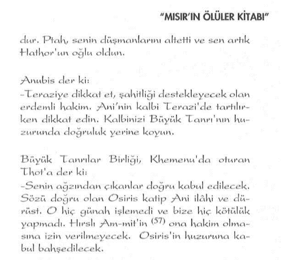
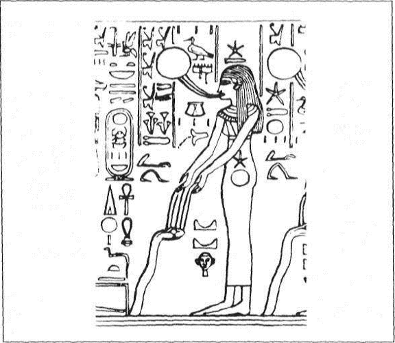
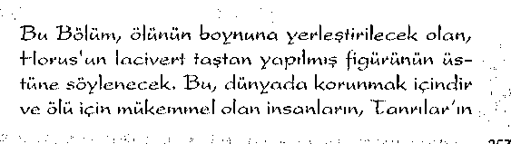

Burada insanların Tanrılar’ın ve ölülerin tarihi başlar...
Ve herşey ezelden beri “Ölüler Kitabı”nda yazılmıştır...
Gerçekten de bu kitap çok gizli ve çok derin bir sırdır...
Albert Champdor
Eski Mısır'ın ezoterik yönünü sembolik bir biçimde, en iyi anlatan metinlerin başında "Mısır'ın Ölüler Kitabı" gelir. Bilinen ilk Ölüler Kitabı, 453 Bab'dan oluşan metinlerden oluşur. Bu metinler. Eski Mısır'ın kutsal yazıları olarak kabul edilmişlerdir.
Atlantisli bilgeler tarafından eğitilen Mısırlı rahiplerce hiyeroglif harflerle kaleme alındığı tahmin edilmektedir. Bu metinler, Mısır mabetlerinde yüzyıllarca gizli tutulmuş ve içindeki sembollerde gizlenen sırlar çok az sayıda kişiye aktarılmıştır. Bu orjinal metinler günümüze kadar gelememiştir.
Günümüzde "Mısır'ın Ölüler Kitabı" ismi verilen ve ikiyüze yakın Bab'dan oluşan metinler, piramit duvarlarından, lahit üzerindeki kayıtlardan ve çeşitli papirüslerde bulunan yazıtların derlenip bir araya getirilmesiyle oluşmuştur. Günümüze kadar gelen ve "Mısır'ın Ölüler Kitabı" ismi verilen metinler. Antik Mısır'daki "Osiris-Thot Öğretisi" anlayışı üzerine kurulmuş, fakat öğretinin kısmen ilk günkü halinden uzaklaştığı, Mısır'ın geç dönem hanedanları zamanına ait derlemelerdir. "Mısır'ın Ölüler Kitabı" olarak isimlendirilen üç farklı derleme söz konusudur. Bunlar: "Heliopolis", "Teb" ve "Saite Derlemeleri "dir.
1- Heliopolis Derlemesi; Sakkara'daki piramitlerin dış duvarlarına, odalarına ve bazı lahitlerine işlenmiş hiyeroglif yazıtlardan derlenmiştir. Beşinci ve altıncı hanedanlar dönemine aittir. Onikinci hanedanlar dönemine kadar bu derlemeler kullanılmıştır.
2-Teb Derlemesi: Onsekizinci hanedandan yirmikinci hanedana dek papirüslere yazılmış ve lahitlere işlenmiş hiyeroglif yazıtlardan derlenmiştir. Yirmi ikinci hanedan döneminde son halini almıştır.
3-Saite Derlemesi: Yirmi altıncı ve sonraki hanedanlar döneminde papirüs ve lahitler üzerine hiyeroglif, hiyeralik ve demotik karakterler kullanılarak yazılmıştır. "Ölüler Kitabı "nın son biçimi olarak kabul edilir.
Mısır'ın Ölüler Kitabı'nın en eskisi olan Heliopolis Derlemesi'nin yazılışının M.Ö. 3.500'lerden öncelerine ait olduğu tahmin edilmektedir. Bu derleme, bu tarihten de çok daha eskilere ait metinlerden kopya edilmişlerdir. Bunu yapılan hatalardan anlayabilmekteyiz. Bu kopyalamayı yapanların, ellerindeki orjinal metinlerin bazı bölümlerini okuyamadıkları anlaşılıyor Çünkü yer yer kendi yorumlarını getirmişler ve okuyamadıkları yerlerle ilgili tahminler yürütmüşlerdir. Demek ki, bu metinlerin oluşturulduğu dönemde ilk orjinallerinin bazı bölümleri okunamayacak derecede eskiydiler. Okuyabildikleri ama belki de anlayamadıkları bazı bölümlerle ilgili Mısırlı katiplerin yaptıkları yorumlar ise, orjinal metinlerin ilk halinin bozulmasına neden olmuştur. Bunu çok doğal karşılamak gerekir çünkü ilk metinlerin en az on - oniki bin yıl öncesine ait olduğunu unutmamak gerekir. Eldeki tüm veriler göstermektedir ki, orjinal metinler aradan geçen binlerce yılın ardından kuşaktan kuşağa geçişi sırasında, yapılan kopyalama hatalarına maruz kalmıştır.
Burada bir ihtimali de göz ardı etmemek gerekir Atlantisli bilge Thot vasıtasıyla, ilk kez Mısır'a gelen bu metinler belki de son derece açık bilgiler içermekteydi. Yani mitolojik anlatım üslubuna büründürülmemiş bir haldeydi. Bger bu savımı/ doğruysa, o halde söz konusu metinlerin mitolojik bir üslupta kaleme alınması Mısırlı rahipler tarafından daha sonraki yıllarda gerçekleştirilmiştir ki, bunun böyle olduğuna dair ezoterik bulgular mevcuttur. Daha önceki yayınlarımızı takip eden okurlarımızın hatırlayacağı üzere, sembolik eğitim sistemine geçiş bizim devremizle birlikte yani Demir Çağ'ında başlamıştır. Sembolik eğitim sisteminin en önemli müesseseleri ise dinler ve mitolojilerdir. Mısır'ın Ölüler Kitabı'nın da anlatım üslubunun mitolojik bir özellik taşıdığı ortadadır. O halde bu sembolik üsluba büründürülme işleminin. Mısırlı rahiplerce gerçekleştirilmiş olma ihtimali oldukça yüksek görünmektedir.
Bu bölümde sizlere sözünü ettiğimiz bu binlerce yıl öncesine ait sırları içinde barındıran Mısır'ın Ölüler Kitabı'nın çeşitli derlemelerinden çıkarttığımız özeti, içerdiği konularına göre sınıflayarak aktarmaya çalışacağım. Az sonra çok farklı bir dünyanın kapılarını aralamaya kendinizi hazırlayın... Çünkü daha ilk satırlarından itibaren kendinizi Mısır'ın o sihirli dünyasının ve Mısır'ın o kendisine özgü anlatım biçiminin içinde bulacaksınız. Bu gizemlerle dolu dünyaya girmeden önce önemli bir ayrıntıya değinmek istiyorum:
Sözünü ettiğimiz bu çevirilerin asla tam anlamıyla Antik Mısır Kültürü'nün kavramlarını ve bu kavramlara yükledikleri anlamlan sizlere tam olarak aktarabileceğimizi asla düşünmeyin. Böyle bir iddiada bulunmak Osiris ve Thot'un torunlarına büyük bir haksızlık olur. Düşünün ki, bu metinlerin ilk başta Batı dünyasınca çözülmesi ve okunabilmesi gerekmekteydi. Çünkü uzun yıllar bu metinlerin grameri çözülememişti. Çözüldükten sonra da, çevirinin ne kadar doğru yapılabildiği ayrı bir tartışma konusu olmuştur. Buna bir de Fransızca ve İngilizce'den Türkçe'ye çeviri hatalarını kuşkusuz ki ilave etmek gerekir. Mesele bununla da bitmiyor. Bu metinler son derece kapalı sembolik bir dile sahiptir. Bu sembollerin ne anlama geldiğini ortaya çıkartabilmek için Mısır Ezoterik Geleneği'ni çok iyi anlamak halta anlamaktan öte, onların duygu ve düşüncelerini kendi içinizde yaşatabilmeniz gerekmektedir. Şunu kabul etmek gerekir ki, Mısır Ezoterik Kültürü'ne ait sırlan içinde barındıran sembolleri açmak ,sanıldığı kadar kolay değildir. Ama bir kez bir yerlerden başladınız mı, göreceksiniz ki, gerisi kendiliğinden gelecektir.
Atlantisliler tarafından eğitilen Mısırlı rahipler daha sonraki yıllarda, bu sırların bekçiliğini üstlendiler. Atlantis kökenli inisiyasyonun merkezi de Mısır olmuş ve sırlar gizli mabetlerde saklanmıştı. Ancak şunu kesinlikle unutmamak gerekir: Tufan Öncesi'ne ait sırlar sonsuza dek saklı kalsınlar diye değil, zamanı geldiğinde ortaya çıksmlar diye buraya gizlenmişti. Bu sırların ebediyen gizli kalması istenseydi, bunlar hiçbir şekilde -üstü kapalı da olsa- gelecek kuşaklara yazılarak aktarılmazdı. Aktarıldı ve yazıldıysa, bir gün mutlaka anlaşılsın diye Mısırlı rahiplerce kaleme alınmış olmalıdır...
İnsanlık ''Evrensel Lisanı" yani "Sembolizmi" okumayı öğrenene kadar bu bilgelik de saklı kalmak zorundaydı. Ve saklı da kalmıştır. Çünkü anlaşılamamıştır. İşte bu duygu ve düşünceyle şimdi kökeni onbinlerce yıl öncesine ait sırların hiç değilse bir kısmını gün ışığına çıkartmaya çalışacağız... Bunu yapabilmek için kendinizi o devrin Mısırlıları yerine koymanız şarttır. Çünkü Mısır Ezoterik Kültürü, Mısırlı gibi düşünülmeden çözülemez...
Mısırlılar'ın kutsal saydıkları metinlerinden derlenerek oluşturulan kitaba günümüzde genel olarak ''Ölüler Kitabı" denir. Kitap "Reu Pert Em Hru" başlığıyla başlar. Bu nedenle kitabın isminin "Ölüler Kitabı" değil, "Reu Pert Em Uru" olduğunu iddia edenler de vardır. "Reu Pert Em Hru" İngilizce'ye "Chapters of the Coing Forth by Day" olarak çevrilmiştir. Türkçe'ye bu cümleyi: "Günle Gelecek Olana Ait Bölümler" ya da "Güne Çıkış'ın Bölümleri" olarak çevirebiliriz. Osiris rahiplerinin burada "gün"den kastettikleri büyük bir ihtimalle gecenin karşıtı olan "gündüz"dür: Yani "ışığa" ve "aydınlığa" çıkış kastedilmektedir. Burada önemli olan "Işık"la olan buluşmanın vurgulanıyor olmasıdır ki, bu ezoterik geleneğe göre: "Ruhsal Aydınlanma" anlamına gelir. Bu nedenle, bu başlığın içerdiği anlamı, "Aydınlanma ve Uyanmaya Giden Yolun Bölümleri" olarak yorumlamak hiç de zor değildir.
Bu yorumumuzu destekleyen bir başka ifade de bizzat kitabın ismiyle ilgilidir: Mısır'ın Ölüler Kitabı...
Evet... Bu metinlere neden Ölüler Kitabı ismi verilmiştir?...
Söz konusu metinlere bu ismin verilmesinin nedeni olarak, belki bu metinlerin ölümden sonrasıyla ilgili çok çeşitli konulara değinmiş olması gösterilebilir. Ki bu yorumun tamamen yanlış olduğunu söyleyebilmek, pek mümkün değildir. Çünkü gerçekten de Ölüler Kitabı'nın büyük bir bölümünün konusu bu dünyada geçmez. Az sonra hep birlikte ayrıntılarıyla göreceğimiz gibi çoğunlukla konuların geçtiği mekân "Öte Alem"dir. Mısır'ın Ölüler Kitabı'nın bu özelliği bir çok araştırmacıyı, aşağıdaki örneğimizde görebileceğiniz benzer tanımlamalara itmiştir:
Kısmen kendisine öte alemde yardımcı olması amacıyla, ölmekte olan kimsenin huzurunda okunan metinlerden, kısmen ile ölülerin gömülme yönlemlerini açıklayan metinlerden derlenmiş, eski Mısırlılar'a ait bir kitaba verilen isim "Olüler Kitabı'dır. Ölüler Kitabı" ikiyüz civarında sihirli söz topluluğu veya Egyplologlar'ın ifadesini kullanırsak, Bab içermekledir. Bunların bazıları pek uzun bazıları ise birkaç satırdan ibarettir. Bunların bilinmesi ölüye geçmek zorunda olduğu Tuat'ın oniki bölgesindeki maceralı yolculuğu sırasında ona yardımcı olacak mabet kapılarının ve kentlerin koruyucu Tanrıları'nı tanımayı, bazıları Osirise dua gibi olan bu yakarışlarla onların iyi tesirlerini çekmekte ve özellikle pek çok sayıda yırtıcı, sinsi kötü ruhun fenalıklarından veya isimleri, zihni, iç organları yiyen, sürekli ölüler aleminin uluhiyetlerinin gölgesinde yaşayan yılan-şeytanlara yakalanmamasında yardımcı olmaktır-. Bunlara benzer tanmılamalarla birçok kitapta karşılaşmak mümkündür. Ancak bu tanımlama meselenin tamamı değildir.
Konuyu biraz açalım...
Ölüler Kitabı'm, sadece ruh varlığının bedenini terk ettikten sonra karşılaşacağı olayların bir açıklaması olarak görmek, onu gerçek değerinden uzaklaştıracaktır. Her ne kadar bedenini terk ederek Öte Alem'e yani Spatyom'a geçen varlığın (ölünün) karşılaşacağı olaylar hakkında ayrıntılı bilgiler de kitabın konusu içinde varsa da, esas özelliği; varlığın hem bu dünyada, hem de Öte Alem'de sadeleşmesi, arınması ve onların tabiriyle söyleyecek olursak: "Tannlar'a eşit olabilmesi için öğrenilmesi gereken bilgiler" içermesidir. İşte bu yüzden, mabetlerde ezoterik bilime inisiye olan adaylara, belirli bir metotla açıklanan sırları bünyesinde sembolik bir dille muhafaza eden Mısır'ın Ölüler Kitabı, her iki açıdan da değerlendirilmesi gereken bir özelliğe sahiptir. Yani Ölüler Kitabı'nda anlatılanları hem bedenini terk eden varlığın karşılaşacağı olaylar, hem de inisiye adayının eğitimi sırasında yaşayacağı şuur halleri olarak görmek mümkündür. Aslında her ikisini de birbirinden ayırmak oldukça güçtür. Hatta ayırmamak da icabeder. Çünkü her ikisi de birbirinin parçası ve devamıdır. Bunun nedeni, öncelikle İnisiyatik Çalışma'nın ruhsal bağlantılı bir süreç olmasında gizlidir. Mısırlı rahipler ve bu rahiplerin denetiminde eğitimlerini sürdüren rahip adayları Astral Seyahat Teknikleri ve Durugörü Yetenekleri'ni kullanarak öldükten sonra gidilecek olan Astral Mekânı yani bugünkü tabiriyle Spatyomu (Öle Alemi) daha ölmeden önce inceleme ve o mekânın özelliklerini öğrenme imkânını bulabiliyorlardı.
Hatta Öte Alem'le bu alemi bir arada yaşayabiliyorlar, spalyomdaki varlıklarla da ruhsal irtibatlar kurabiliyorlardı. Bu, sadece Mısır İnisiyasyonu'na ait bir özellik değil, tüm inisiyatik çalışmalarda uygulanan metotlardan biriydi. Az sonra göreceğimiz gibi bu ruhsal irtibat, sadece Spatyom'daki varlıklarla kısıtlı değil, evrensel - kozmik bağlantılar da söz konusuydu. Bu konuya az sonra döneceğiz...
Evet... Dikkat ederseniz kitabın ismi bile bizi ne kadar meşgul etti... Bizi kitabın ismi bu kadar meşgul ettiyse, içinin içinden nasıl çıkacağız diye düşünebilirsiniz... Bu düşüncenizde son derece haklı olduğunuzu söylemek zorundayım... Çünkü konu Mısır'ın Ölüler Kitabı olunca, meselenin özüne ulaşmak, gördüğünüz gibi pek kolay olamıyor.
AYDİNLANMA YOLU'NDA RUHUN SAFLAŞMASI
Mısır'ın Ölüler Kitabı ruhsal değişim için, hem ölünün hem de ölüye yardımcı olacakların yapmaları gereken bir dizi ritüelden bahseder. Bu ritüellerin çoğu majik unsurları da içinde barındırır. Sözü edilen bu ritüellerin uygulanmasından sonra ne olacağını da, yine o kendisine has üslubuyla şöyle dile getirir:
Ölüler Kitabı'nın ana konusu "Ruhun Saflaşması"na yardımcı olmaktır. Ölünün ya da inisiyenin Öte Alem'in çeşitli safhalarından geçerek "Tanrılar'ın Huzuru"na çıkabilmesi için yapması gerekenler, Mısır'ın Ölüler Kitabı'nın Bablarını oluşturmuştur. Yani ölmeden önce ya da öldükten sonra inisiye rahiplerin yaptıkları ruhsal deneyimlerin ve kozmik irtibatların mitolojik bir üslupla anlatılmasıyla ortaya çıkmış metinlerdir bunlar...
İçerdiği konular...
Mısır'ın Ölüler Kitabı, daha sonraları bir araya getirilen Mısır yazılı kayıtlarından derlenerek oluşturulduğu için, işlediği konular arasında tam bir devamlılık söz konusu değildir. Bu özellik daha sonra bir araya getirilen bazı Kutsal Kitaplar için de geçerlidir. Bir örnek vermek gerekirse Kur'an-ı Kerim'in içindeki sureler de, vahyin iniş sırasına ve içerdiği konularına göre yer almamıştır. En son Kutsal kitap olma özelliğine sahip olan Kur'an-ı Kerim'in de içerdiği konular belirli bir sıra takip etmez. Neyse bu ayrı bir konu...
Biz şu anda incelemeye başlayacağımız Antik Mısır'ın Kutsal Kitabı'nı, içerdiği konulara göre sınıflayarak ele alacağız. Böylelikle içerdiği temaları daha kolay ortaya çıkartma imkanına ulaşabileceğiz.
Derlemelere verilen İsimler...
Mısır'ın Ölüler Kitabı'nın önemli bir bölümünün çeşitli papirüslerden alınan yazıtlardan derlenerek hazırlandığını söylemiştik. Bu yazıtlar, o papirüsleri kaleme alan katiplerin isimleriyle anılır. Nu Papirüsü, Ani Papirüsü, Anhai Papirüsü, Nefer-uben-f Papirüsü, Turin Papirüsü gibi...
Bu nedenle de bu papirüslerde çeşitli konuların başlangıçlarında: "Osiris Nu der ki: ...", "Osiris Ani der ki:..." gibi ibarelere rastlanır. Osiris Nu, Osiris Ani gibi tanımlamalar o papirüsü kaleme alan katibin bir Osiris Rahibi okluğu anlamına gelir. Yani Osiris Öğretisi'nin sırlarına vakıf inisiyeler demektir. Evet.. Bu küçük hatırlatmadan da sonra, artık bu gizemli kitabın satırları arasında dolaşmaya başlayabiliriz...
MISIR'IN ÖLÜLER KİTABI GÜNLE GELECEK OLANA AİT BÖLÜMLER
Ölünün Neter-Khert'deki yolculuğu sırasında olacakların kısa bir özeti ve majik etkilere sahip bazı ilâhilerin okunmasıile Mısır'ın Ölüler Kitabı başlar:
Günle gelecek olana ait bölümler burada başlar ve gelecek olanla Neter-Khert'e giriş için söylenen övgü ve methiye içeren ilahiler ve güzel Amen-tet'te söylenen büyüler ceza gününde içeri girerken söylenecekler. Güzel Amen-tet'te söylenen büyülerden kasıt majik uygulamalardır. Peki ama güzel olarak nitelindirilen Amen-tet neresidir?
Amen-tet sözcük anlamı itibariyle "Saklı Yer" anlamına gelir. "Batı 'daki Dağ" olarak da tercüme edilebilir. Bazı ezoterizm araştırmacıları bu sözcüğün farklı bir boyutu ya da halk hafızasında Atlantis'i ifade ettiği görüşündedirler. Muhtemelen Tufan önceki Atlantis'teki büyük inisiyatik merkez kastedilmektedir. Güzel Amen-tet'te söylenen büyüler ise bu inisiyatik merkezde gerçekleştirilen majik çalışmalardır. Metnin devamı övgü ve ilâhi özelliği taşır. Bu sözleri basit bir övgüymüş gibi düşünmemek gerekir. Bu sözlerin üzerine yüklenen enerjilerin meydana getireceği etki burada söz konusudur ancak tercüme edildiğinde, bu etkinin ortadan kalktığı da unutulmamalıdır. Bu konunun bir yönü. Diğer bir yönüyle ilgili olarak şunları söyleyebiliriz:
Ölüler kitabında ölüye Öte Alem'deki yolculuğu sırasında açıklanan yöntemler ve okuması gerektiği söylenilen ilâhiler, ölen varlığa astral mekandaki görevlilerce açıklanan inisiyatik sırlar ve bilgilerdir.
Yukarıdaki sözler her ne kadar bir övgü, ilâhi ve dua niteliği taşıyorsa da aynı zamanda olacakların da kısa bir özetini bize sunmaktadır. İnisiyasyonda ya da ölümden sonra karşılaşılacak zorluklardan sonra ulaşılması hedeflenen Osiris'in Evi'ne girişin saflıalan burada anlatılmaktadır. Burada geçen sembollerin bir kısmını kısa maddeler halinde açalım:
"İlâhi Baba Osiris": Burada Mu Uygarlığı'na ait çok eski bir sembolle karşılaşmış bulunuyoruz. Mu Kültürü'ne ait bir sembol olan "Baha" sembolü, daha sonra Atlantis'e oradan da Mısır'a geçmiştir. Bu sembolü daha sonra İsa Peygamber de kullanmıştır. Baba sembolü, o sözü söyleyenin bağlı bulunduğu ruhsal planın en üst hiyerarşik noktasını ifade eder,
"Savaşmak": Hem Öte Alem'de, hem de yaşarken inisiyasyon sırasında geçilen safhalar sırasında sarfedilen çaba ve zorlukları ifede eder. Bu, insanın kendisiyle olan savaşıdır.
"Gizli su pınarlarının açılması": Şuurlandıncı spiritüel tesirlerin ortaya çıkışının sembolüdür. Su aynı zamanda bilginin de sembolüdür. "Kabrin kapısının kilidinin açılması": Ölümün ne olduğunu ve ruhsal varoluşun süreklilliğinin anlaşılmasını ifade eder. Aynı zamanda ruhsal irtibatın kurulması anlamına da gelir.
"Sebau Şeytanları": Negatif enerjilerin merkezi konumundaki ruhsal planın sembolüdür.
"Osiris'in duyduğu gibi duymak ve gördüğü gibi görmek": Onun anlayış ve bilgisine ulaşmak demektir Öte Alem'de Osiris'in cennetine ulaşmak, yeryüzünde ise inisiyasyonu tamamlamak anlamına gelir.
"Çoğunluğun ağzı": İnisiyasyondan geçmemiş kişilerin anlayışını ifade eder.
"Dünyadayken saf bulunmak": İnisiyasyonu tamamlamış ve astral tortularından kurtulmuş kişi demektir.
"Osiris'in önünde yükselmek": Astral tortularından kurtulan varlıklar Öte Alem'in ya da Mısırlı 1ar'in terminolojisiyle söyleyecek olursak, Neter-Khert'in katlarında kolaylıkla yükselebilecekler demektir. Bunun da, Osiris'in bilgisinine ulaşmakla mümkün olacağı anlatılmaktadır. Bu yükselişin nihai noktasını ise "Tanrılar gibi olmak" diye ifade eder;
Bu bölümde de rehberlik sisteminin varlıklara yardımı dile getirilmektedir. Yolun açılması ve engellerin bu yardım sayesinde ortadan kaldırılması anlatılmaktadır. Böylelikle o meşhur tartılma ritüelinden varlığın geçebilmesine olanak sağlanmaktadır. Turin Papirüsü'nde, bu bölüm aşağıdaki sözlerle biter:
Mısır'ın Ölüler Kitabı bu bölümün ölü tarafından bilinmesi halinde olacakları şöyle açıklar:
Cenaze gününde Sahu'nun Tuat'a girebilmesi için gerekli sözler:
Ölümden sonra cesede de yapılacak bir takım manyetik enerji aktarımları söz konusudur. Bundaki amaç ruh ve beden ilişkisinin kesilmesidir. Ölünün yıkanmasının da ardında yatan metapsişik prensip bununla ilgildir. Ölümle birlikte her ne kadar ruhsal ve fiziksel ayrışma zaten kendiliğinden meydana geliyorsa da, fizik beden ruhsal enerjiyi astral enerjisiyle bir girdap gibi kendisine çekmeye devam eder. Ve bu çekim varlığın fizik alemden kopuşunu zorlaştırır. Yükselişini engeller. İşte ölümden sonra yapılan çeşitli ritüeller bu çekimi ortadan kaldırmaya yöneliktir. Bu yapılan ritüellerde uygulanan asıl yöntem, manyetik enerjilerle bu çekime karşı bir barikat oluşturmaktır. Su manyetik enerjileri bünyesinde depolayabilme özelliğine sahip olduğundan, manyetik enerjiler öncelikle suya aktarılır ve daha sonra da bu suyla ceset yıkanırdı. Keten kumaş ve merhemler de yine bu yöntemin bir parçasıdır. Bu konuyla ilgili bir başka bölümde şu satırlara yer verilmiştir:
Buraya kadar ilk bilgiler verilir. Artık sıra ölümden sonra "Sahu "nun yani bedenini terk etmiş ruhsal varlığın öte aleme intibak edebilmesi için gerekli açıklamalardadır. Mısır'ın Ölüler Kitabı'nın bu konuyla ilgili babları şu sözlerle başlar :
Bu Bölüm’ün sözleri ölü istirahate yatırıldıktan sonra söylenecek, onlar sayesinde Tenn-t bölgesi efendisiyle memnun olacak. Ve Osiris, kraliyet katibi, Nekhtu-Amen, sözü doğru olan gelecek ve Ra Gemisine binecek ve Sahu tabutunun üstünde sayılacak ve Tuat’a yerleştirilecek.
Ölümden sonra ruhun bedenden ayrılıp kendi varlığını sürdürmesi Mısır'ın Ölüler Kitabı'nda son derece açık bir şekilde dile getirilmektedir. "Sahu'nun tabutunun üstünde sayılması" ile bu açık bir şekilde dile getirilmektedir. Ölüm hadisesinin ruhun bedeni terketmesi olduğu Ölüler Kitabı'nda şöyle dile getirilmiştir:
Hemen devamında, ölümden sonra varoluşun devam ettiği şu satırlarla anlatılmaktadır;
Beden terkedildikten sonra varlığın yok olmadığı, Neter-Khert'de ikinci kez ölmeyeceğim sözüyle anlatılmaktadır. Bu konuyla ilgili bir diğer bölümde, ölümden sonra geçilen mekanın özellikleriyle ilgili bilgilere yer verilmiştir:
Aktarmış olduğumuz bu bablann ilk satırlarında Tuat'ın yani Öte Alem'in (Spatyom'un) ilk merhaleleri ile ilgili son derece önemli bilgiler yer almaktadır. Mısırlılar Tuat'ın bu ilk bölümlerine Maati Salonu ismini vermişlerdir. Öte Alem'e yeni intikal etmiş olan her varlık kısa ya da uzun bir adaptasyon bozukluğu dönemi geçirir. Bu adaptasyon dönemi tam anlamıyla bir teşevvüş yani bocalama ve şaşkınlık halinin yaşandığı bir süreçtir. Çünkü yeni geçilen bu alemin özelliklerine uyum sağlayabilmek, ilk başta pek kolay olamamaktadır. Dünya maddesiyle kıyaslandığında son derece süptil (yüksek titreşimli) maddelerden oluşan bir mekan olan Spatyom'un ilk merhalelerine uyum sağlayabilmek için her varlığın belli bir süreye ihtiyacı olmaktadır. Mısır'ın Ölüler Kitabı'nda Spatyom'un farklı bir maddesel yapıya sahip olduğu "suyu yok, havası yok, derinliği kavranılamaz" sözleriyle dile getirildiğini görmekteyiz. Bu mekânın özellikle ilk aşamalarında bir adaptasyon sorunu yaşandığı da "orada insanlar aciz bir şekilde dolaşırlar" cümlesiyle özetlenmiştir.
"Su ve hava yerine Ruh-ruhlar'ın halinin verilmesinin istenmesi" bu acizlikten kurtulma isteğini dilegetirmektedir. Yine aynı şekilde "kek ve bira yerine gönül rahatlığı verilme" isteği de Öte Alem'e intibak etme çabalarnıı dile getirmektedir. Metnin sonundaki bu cümleler, Öte Alem'deki ihtiyaçlarını dünyadaki ihtiyaçlardan son derece farklı olduğunu da anlatmaktadır. Metnin devamında bu ilk bocalama devresi atlatıldıktan sonra, bir aydınlanmanın gerçekleşeceği şu sözlerle açıklanmıştır:
Mısırlılar'da karma sözcüğü olmasa da, kavram olarak bunu adalet anlamma gelen "Maat'la karşılarlar. Büyüsel Evren'deki bölgelerden birinin adı "Maati Salonu"dur ve ölen her kişi buraya mutlaka gelir. Bu bölge Tanrıça Maat taralından yönetilir. Buraya gelen herkesin kalbi terazide tartılır; bir kefede kalp, diğer kefede maat tüyü olmak üzere. Kişinin buradan sonra nereye gideceği bu yargılamya bağlıdır. İnisiye rahipler, bu bölgeyi deneyimlemek için, ölmeyi beklemek yerine "Terazi Ritüeli" ve "Maati Salonu Ritüeli"ni uygulayarak buraya gelirler. Bu tam anlamıyla astral bir deneyimdir.
Bu astral deneyim sayesinde inisiyeler ölümden sonra nelerle karşılaşacaklarını, henüz daha ölmeden dünyada yaşarken öğrenebilmekteydiler. Mısırlılar, "Evrensel Sebep-Sonuç Yasası" olan "Karma"yı "Tanrıça Maai'la sembolleştirmişlerdir. Tanrıça Maat'ın başındaki "doğruluğu", "adaleti", "erdemi", "bilgeliğl" ve "kanunu" simgeleyen tüyle gösterilmesinin sebebi budur. Az sonra göreceğimiz kalbin tüyle tartılması da yine bu sembolik tanımlamanın bir devamıdır. Şimdi Maati Salonu ile ilgili Mısır'ın Ölüler Kitabı'nda geçen bölümleri özetle ele alalım:
Burada öncelikle birbirini tamamlayan iki sembol üzerinde durmak istiyorum:
"Tanrı'nın ismini bilmek" ve "Tanrının yüzüne bakabilmek"
"Tanrı'nın ismini bilmek": Mısır tenninolojisine göre söyleyecek olursak Tanrılar Bilgisine sahip olmak demektir. Yani Evrensel İdare Mekanizması'nın işleyişi ile ilgili bilgi sahibi olmak anlamına gelir.
"Tanrı'nın yüzüne bakabilmek": O Tanrı ile semboleştirilen ruhsal planla irtibata girmek ve onun tesiriyle aydınlanmak demektir Yani teorik olarak önceden kendisine öğretilen bir bilginin pratiğe geçirilişi söz konusudur. Metinde geçen bir diğer önemli sembol de kanla beslendiği söylenilen Tanrılardır..
"Kanla beslenen kırkiki Tanrı": Burada kan, astral planda bulunan varlığın astral yapısıyla ilgili tesir alanıdır. Yani geçmiş yaşamı sırasında, astral bedeninde biriktirdiği enerjiyi ifade eder. Astral arınmasını gerçekleştirememiş hatta tam tersine daha da kabalaştırarak Maati'ye gelen varlık daha yukarılara yükselebilmek için. dünyada yapamadığı bu arınmayı şimdi yapmak zorundadır. Burada da yapamadığı sürece varlığın Maati'den Tuat'ın üst safhalarına çıkışı hiç bir zaman mümkün olamayacaktır. Bu noktada varlığı tekrar dünyaya döndümıekten başka çare yoktur. Bu tekrar doğuşlar bazen öyle bir noktaya gelebilir ki, varlığın astral tortuları adeta bir zırh gibi kabuklaşabilir ve bu süreç tam bir kısır döngüye dönüşebilir. İşte bu andan itibaren yapılabilecek sadece tek bir şey kalmaktadır. İşte bu noktada Spatyom'un rehber - vazifeli varlıkları devreye girererler. Bedenini terk ederek astral bedeniyle bu mekana intikâl etmiş olan varlığın astral tortusu spatyomun: bu konuyla ilgili vazifeli varlıklannca yok edilir. Buna daha önce de değinmiş olduğumu gibi "Astral Yakma" adı verilir. Bu kısır döngüye düşmüş olan varlığa uzatılan bir yardım elidir. Ancak bu yardımın hem olumlu, hem de olumsuz yönleri vardır. Çünkü bu astral tortuların vazifeli varlıklarca ruhsal bir yönelişle yakarışı sırasında, varlığın geçmiş yaşamlanyla ilgili birçok anısı da silinmektedir. Bu da birçok yaşamın heba olması anlamına gelmektedir. Gerçi varlık astral tortularından kurtulmuştur ama geçmişine yönelik birçok anı ve deneyimi de ortadan kalkmış olmaktadır.
Kanla beslenen kırkiki Tanrı işte bu meseleyi anlatır.
Astral tortuları yakılmış kesik kafalı insanlar
Mısır'ın Ölüler Kitabı'nda bu konuyla ilgili bir de çizim yer alır. Arka sayfada görmüş olduğunuz kesik kafalı insanlar astral tortuları yakılmış varlıkları sembolize etmektedir. Ve dikkat ederseniz, Tuat'ın en alt kısmında bulunmaktadırlar. Önlerindeki yılan sembolleri bu insanların aydınlığa doğru ilerlediğini göstermektedir. Çünkü astral tortularından artık kurtulmuşlardır. Kesik kafaları ise, artık eskiye ait bilgilerinin silinmiş olduğunu simgelemektedir. Gelelim az önce aktarmış olduğumuz metnin sonundaki anlatımlara...
Az önce aktardığımız metinin sonu, varlığın geçmiş yaşamının değerlendirilişi ile ilgili satırlardan oluşur. "Falan, falan şeyi yaptım", "falan falan şeyi yapmadım" gibi ibareler, varlığın Maati Salonu'ndaki rehber vazifeli varlıkların karşısında geçmiş yaşamı ile ilgili değerlendirmelerini anlatmaktadır. Çünkü Maati Salonu varlığın geçmiş yaşamında yaptığı işlerin bir değerlendirilme yeriydi. Bu değerlendirmeden sonra varlık yoluna devam etmekteydi.
Seninle Ka için bir yol olacak ve ölülerin gölgelerini tutsak tutanlar tarafından ruhun hazırlanacak. Cennet seni bağlı tutmayacak, dünya seni esir almayacak.
Maati Salonu'ndan Tual'a geçişle ilgili anlatılanlara kısa bir ara verip buraya kadar aktırdığımız satırların arasına gizlenmiş sembolleri maddeler halinde ele alalım:
"Sözle görünür şeyler": Yoğun bir konsantrasyonla düşünce enerjisinin belli bir noktada odaklandınlınasıyla oluşturulan maddesel formlardır Günümüzdeki Parapsikolojik çalışmalarda bu maddesel oluşumlara düşünce formları ismi verilmektedir. Yoğun enerjiye sahip olan bu düşünce formlarının fiziksel etkiler meydana getirme (izelikleri de vardır. Mısır'ın majik çalışmalarında bu enerjilerden etkin bir şekilde yararlanılmaktaydı.
"Persea ağacından her şeyi görmek": Ezoterizm'de Ağaç, yere saldığı kökleri ve göğe uzattığı dallarıyla gökyüzü ile yeryüzü arasında kurulan irtibatın sembolü olmuştur. Bu ağaç vasıtasıyla her şeyi görmekle, göksel planlarla kurulan ruhsal itibat sayesinde inisiyenin bilgilenmesi anlatılmak istenmektedir. Nitekim az sonra metnin devamını aktardığımızda sizlerin de rahatlıkla göreceğiniz gibi, bu ruhsal irtibat karşılıklı konuşmalarla gayet açık bir şekilde dile getirilmektedir.
"Göl'de yıkanmak": Göl ruhsal planların sembolüdür. Göl'de yıkanmak ise, bu ruhsal planların tesirlerine muhatap olmak demektir .
"Ra'nın denizcileri": Mısır Mitolojisi'nde daire ve güneşle sembolize edilen Ra, birliğin ve mükemmelliyetin sembolüdür. Aynı zamanda Ruhsal İdare Mekanizması'nın hiyerarşik merkezini de ifade eder. Deniz ise bilginin sembolüdür. O halde her iki sembolü birleştirecek olursak, Ra'nın denizcilerinin Ruhsal İdare Mekanizması'na bağlı vazifeli ruhsal planların sembolü olduğu açık bir şekilde ortaya çıkacaktır.
"Kristalden tılsımlı asa": Atlantis'te kozmik enerjileri depolayabilme özelliğine sahip kristal enerji merkezlerinden bahsetmiştik. Bu asa da aynı teknikle çalışan ve muhtemelen kökeni Atlantis olan bir objeydi.
"Çakmak taşından bir asa": Rüzgarların vereni olarak tanımlanması son derece manidardn. Çünkü bu tür asalarla rüzgar çıkartıldığı ve yağmur yagdırıldıgına dair birçok tarihi kayıt bulunmaktadır. Bunlardan daha önce bahsetmiştik. Enerjileri bir yerden bir yere aktarmada kullanılan asalar, özellikle majik çalışmalarda çok önemli bir fonksiyon görmekteydi. Nitekim Mısır'ın Ölüler Kitabı'nda ölünün bunlarla büyü yaptığını söylenmesi, bu asaların sıradışı özelliğini gözler önüne sergiler.
"Kapı'nın çeşitli bölümleri": Her bir kapı, Maati Salonu'nun ayrı bir özelliğine karşılık gelmektedir. Bu isimlerin ifade edilişi ise, bu özelliklerin varhk tarafmdan anlaşılmış olduğunun sembolüdür.
"Kendi vaktinde oturan Tanrı": Farklı bir maddesel yapıya sahip olan Spatyom'un zaman bakımmdan da farklı bir sürece sahip olduğunun mitolojik anlatımıdır. Mısır'ın Ölüler Kitabı'nda geçen şu söz, zamanın rölatifIiğini ve evrende farklı zamanlar bulunduğunu açıkça şöyle dile getirir: "Ben Dün'üm, Bugün'ü bilirim."
"Cennetin ateşten, duvarlarının canlı yılandan ve yerinin ise akarsudan meydana gelmesi": İslam Geleneği'nde Cehennem ateşler içinde tasvir elmiş olduğu için, ilk başta Cennet'te ateşin ne işi var diye düşünenler olabilir. Ancak Ateş'in arınmanın sembolü olduğu hatırlanacak olursa, burada çizilen motifin ne kadar yerli yerinde olduğu derhal anlaşılacaktır. Nitekim, İslam Tasavvufu'nda "Cennetin yolu cehennemden geçer" sözüyle anlatılmak istenen de yine aynı bilgidir.
Kur'an-ı Kerim'de cennet tasviri yapılırken altından ırmaklar aktığı ifade edilmektedir. Aynı tema Mısır'ın Ölüler Kitabı'nda da cennetin yerinin akarsudan meydana geldiği sözüyle dile getirilmiştir. Görüldüğü gibi sembolizmde hiç bir farklılık yoktur. Hangi zaman, hangi mekân ve hangi toplumda olursa olsun, hep ezoterik bilgiler aynı sembollerle anlatılmıştır. Artık Tuat'ın kapıları açılmıştır Varlık Maati Salonu'ndan geçip Tuat'ın katlarında yükselişe geçebilecek ve Osiris'in Cenneti'ne doğru ilerleyebilecektir.
"Tuat'a zorla yol açmak": Öte Alem'in şartlarına uyum sağlama sürecinin zorluklarla atlatıldığının ifadesidir.
"Hazır Ruh-Beden ve Hazır Ruh-Ruh": Dünya'da ve Öte Alem'de aydınlanmış bir inisiye olduğu anlamına gelir.
Artık sıra büyük sınava gelmiştir... Gerçekten de ölünün (inisiyenin) söylediği gibi bir yaşam geçirip geçirmediği ve sırlara inisiye olup olmadığının tespiti için o meşhur yargılamanın daha doğrusu tartmın yapdacağı ritüele sıra gelmiştir...
Kalbin tartılmasıyla ilgili bölümler Büyük Birlik Tanrıları'nın isimlerinin sıralanmasıyla başlar..
Ölüler Kitabı'na göre ölünün ruhu, Tanrısal Mahkeme'nin gerçek ve adalet efendilerinin önüne çıktığında, Osiris'in önünde yeri öptükten sonra, bütün pisliklerden temizle-nebilecekti. Çünkü ruhu kısa dünya yaşamı boyunca kendisi ne yakışmayan tutkular ve hırslarla pislenmişti... Ve arınması gerekiyordu...
Onu yargılamak için mahkeme üyeleri yerlerini almışlardı... Ondan beklenen kendisini temize çıkartmaktı... Aksi takdirde karanlık alt dünyaya geri gönderilecekti. Thot'un önünde olumsuz itiraf denilen ilk aşama kendisini bekliyordu. Yaşamı sırasmda yaptığı hataları Thot'a itiraf etmek mahkemelerin ilk aşamasnıı oluşturuyordu. Gizli kitapların sahibi ve Tanrılar'ın yazıcısı Thot bir yanda, Kurt başlı Anubis ise diğer yandaydı. Tam ortalarında ise bir terazi bulunmaktaydı. Mahkeme üyeleri ise hemen arkalarında olup bitenleri izlemekteydiler.
KALBİN TÜYLE TARTILMASI:Anubis'in ölünün kalbini tüyle tartması başlı başına inisiyatik ve ezoterik içerikli bir semboldür. Kalp vicdanı sembolize ettiği gibi, öncelikle ölünün dünyada yaşarken yaptığı tüm fiileri de ifade etmekteydi, Kalbin sembolize ettiği bir diğer unsur da, ölünün astral bedeniydi. Kalp Ruhu olarak Mısır'ın Ölüler Kitabı'nda yer alan astral bedenin tortulardan ne kadar arınıp arınmadığının ortaya konuluş sembollerinden biri de gerçeğin sembolü olan tüyle tartılmasıdır.
Ölü, dünyadaki yaşamıyla ilgili uzun bir konuşmaya başladığında, tüm ayrıntılar mahkemenin üyelerince dikkatle dinlenirdi

Sıra o meşhur tartının yapılma anına gelmiştir... Bu tartı ölünün sözlerini ya doğrulayacak ya da yalanlayacaktı. Anubis tarafından terazinin bir kefesine ölünün kalbi, diğer bir kefesine ise gerçeğin sembolü olan bir tüy konurdu. Thot ölünün kalbiyle tüyün bulunduğu terazinin kefelerine bakar ve sonucu açıklardı
Ölü artık serbesttir. Ebediyen istediği her yere gidebilecektir. İster yaşayanların topraklarına ister Samanyolu'nun derinliklerine; nereye isterse artık yollar önünde açılmıştır.
Ve seçim kendisine aittir..
İşte o anda derinliklerden gelen bir ruhun sesi duyulur:
Gerçek Tartı, Kıyamet Günü'ndedir.
Mısır'ın Ölüler Kitabı'nın en önemli sembollerinden biri, bedenini terk ederek Öte Aleme geçen varlığın kalbinin tüy ile tartılma temasıdır. Bu, birçok papirüs ve mabetlerin duvarlarına resmedilerek de ölümsüzleştirilmiş bir semboldür. Kökeni onbinlerce yıl öncesine ait bu sembolün dünya üzerindeki en son din olma özelliğine sahip İslâmiyet'te de kullanılmış olması, konunun dikkate değer bir diğer yönünü oluşturur.
Bu sembol Kur'an-ı Kerim'deki bir ayette son derece kısa ve net bir ifadeyle şöyle dile getirilmiştir:"And olsun ki, yaptıklarını kendilerine bir bir anlatacağız zira anlardan uzak değildik. Gerçek tartı kıyamet günündedir. Tartılan ağır gelenler, işte onlar kurtulanlardandır. Tartıları hafif gelenler, ayetlerimize yaptıkları haksızlıklardan ötürü kendilerini mahvetmiş olanlardır." (Araf Suresi: 7/7-8)
Kıyamet Alametleri isimli kitabımda tüm ayrıntılarıyla ele almış olduğum gibi; Kıyamet, dünya okulunda insanların topluca uyanışa geçecekleri günlerin adıdır. Kıyam etmek kelime anlamı itibariyle "ayağa kalkmak"demektir. Bu kelimenin mecazi anlamı dinsel literatürde "ölülerin ayağa kalkışı" olarak da yorumlanmıştır. Ölülerin ayağa kalkışı ise ölü anlayışların uyanışı anlamına gelir.
Kıyamet gününü elimizdeki son bilgiler ışığında şöyle özetleyerek yorumlayabiliriz: O günlere gelinceye kadar uyanışını gerçekleştirememiş insanların topluca uyanma imkanına ulaşabilecekleri günlerin adına"Kıyamet Zamanı" diyebiliriz. (58) Ancak o günlere gelinceye kadar uyanabilcn insanların da bulunduğu unutulmamlıdır. Özel inisiyasyondan geçirilen insanları bunlar arasında sayabiliriz ki, Mısır'ın Ölüler Kitabı'nda anlatılanlar bu kişilerin uyanışlarıyla ilgili serüveni üstü örtülü bir şekilde dile getirmektedir.
Evet... Biz bu serüveni takip etmeye devam edelim...
Tartıdan başarıyla çıkanlar için önlerinde kat etmeleri gereken uzun bir yolculuk vardır.
Bu, Osiris'in cennetine ve Ra'ya doğru bir yolculuktur...
Bu yolculuğu sırasında kendisine çeşitli rehberler yardımcı olacaktır...
Mısır'ın Ölüler Kitabı'nın bu bölümünde, ölünün Ra'nın Kayığı ile gökyüzündeki yolculuğu anlatılmaya başlanmaktadır.
Bu yolculuğu sırasında neler olacağı anlatılırken önemli bir sembolün son derece açık bir şekilde kullanıldığını görüyoruz: "Yıldız Tanrılar'la sevgi dolu ilişkisi olmak" Yıldız Tanrılar'dan kasıt Galaktik Uygarlıklara ait varlıklardır. Sevgi dolu ilişkisi olmak ise bu varlıklarla kurulan irtibatı ifade eder. O halde, burada sözü edilen olayların, Dünya Spatyomu'ndan kurtulmuş olan bir varlığın yaşadıklarıyla ilgili olduğunu anlıyoruz. Kullanılan bir sonraki sembol, bu anlattıklarımızı teyid etmektedir: Birisiyle tanıştığımızda ilk olarak ne yaparız? Karşılıklı olarak birbirimize adımızı söyleriz değil mi?
İşte burada "Adının ilan edilmesi" ile anlatılmak istenen. Yıldız Tanrılar'la ölünün kurduğu irtibatın, ilk anıdır. Osiris Rahibi Ani'nin sonunda Tanrılar'la birlikte olacağının söylenmesi de bu anlatılanları sonuçlar niteliktedir. Bu konuyla ilgili bir başka yerde geçenTanrılar'ın Toprağı tanımlaması da yine Yıldız Tanrılar'la ilgilidir. Bu tanımlama Yıldız Tanrılar'ın mekanlarını ifade etmektedir:
Bu yolculuk sırasında ölünün (Osiris Rahibi Ani'nin) karşılaşacağı diğer varlıklarla ilgili de anlatımlara rastlıyoruz:
Bu yolculuk sırasında Osiris Ani'nin, çoğu bir dilek tarzında anlattığı şeyler de vardır:
NETER-KHERT'DE GÜNEŞ KAYIĞI İLE YOLCULUK
Nu Papirüsü'nden alınan bu vinyette, "ölü" Güneş Kayığı'nın başında ayakta durmakta. Yüzü kendisine refakat eden Tanrılar'a dönük durumda. Terazideki tartıyı geçen ve doğrulardan bulunmuş olan "ölü", Ra'nın Kayığı'nda yerini almıştır. Ruhu Ra'ya ulaşıp onda erimeden evvel, Osiris'le birlikte Neter-Khert'de yol alıyor.
Osiris Rahibi Ani'nin bu anlattıklarının büyük bir bölümü "Ba Ruhu", "Ruh Ruhu" tanımlamalanyla ifade edilen astral, kozal bedenlerinin gittiği mekana uyum sağlayabilip sağlayamayacağı ile ilgili endişeleri dile getirmektedir. Neler Khert'teki bu yolculuk sırasında birbirlerine kordonla bağlı olduğu açıkça anlatılan bu bedenlerden bir diğerine geçişten de söz edilmektedir. "Ba Ruhlar'in Ruh Bedenleri'ne içirmesi" sözü, bir üst bedene geçiş ve bu yeni geçilen bir üst safhanın anlayışına kavuşmak demektir. Astral bedenden daha üst bedenlere bilincin konsantre edilebilmesi için arınmanın en üst seviyede yapılabilmiş olması gerektiğini daha önce de vurgulamıştık. Ra'nın kayığında yapılan seyahat sırasında bu arınmanın gerçekleştirilme zarureti aşağıdaki vinyette dile getirilen skarabe sembolüyle de dile getirilmektedir. Arınma için değişmez koşul dünyasal arzu ve isteklerin terki bu sembolle anlatılmaktadır.
Güneş kayığıyla Ra'ya ulaşabilmenin en önemli koşulu dünyasal arzu ve isteklerin terkidir. Skarabe ve üzerinde güneşi simgeleyen daire ile bu mesele, vinyette sembolik bir şekilde anlatılmaktadır.
Ölüyle birlikte biz de yolculuğumaza devam edelim...
Ra'nın kayığı ile Neter-Khert'in katlan arasındaki yolculuğun bir çok geçilen aşamaları vardır.
Ancak bunun gerçekleşebilmesi için Tuat'ın oniki bölgesinin sırasıyla geçilmesi gerekmekteydi. Tuat'ın son bölgesine gelindiğinde kayığı çekmeye yarayan halatların yılana dönüştüğü görülmektedir. Ölü artık Tuat'ın sınırlarının sonuna gelmiştir ama yine de Neter-Khert'de kat etmesi gereken safhalar kendisini beklemekteydi..;
Sıra Osiris'in Evi'ne ulaşabilmek için 21 katı geçmeye gelmiştir. Bu katlara Osiris'in Evi'nin Pilonları ismi verilir. Varlık bıınlan da sırasıyla kat etmek ve böylelikle yükselmek zorundadır. Burası Neter-Khert'in üst katmanlarıdır. Şuursal algılaması her üst planlara geçtikçe daha da genişlemekte ve olup bitenleri daha iyi anlamaya başlamaktadır. Şuuru genişledikçe sadece son yaşamı ile ilgili hatıraları değil, daha önceki yaşamlarını da hatırlamaya başlamaktadır. Bu durum Mısır'ın Ölüler Kitabı'nda tek bir cümleyle şöyle özetlenmiştir:
Konuyu biraz açalım...
Metapsişik Olaylarla ilgili tutulan literatürde "Ölüme Yakın Deneyimler" başlığı altında toplanan bazı yaşanmış ölüm deneyimleri vardır. Parapsikoloji Bilimi'nin yakından ilgilendiği "Ölüme Yakın Deneyim", çeşitli nedenlerle örneğin ağır hastalık, yüksek ateş, yaralanma ya da başka nedenlerle komaya giren ve ruh beden ilişkisi kopma noktasına gelen in sanların yaşadıkları hâle verilen bir isimdir. Ruh ve beden ilişkisi kopma noktasına kadar gelen kimilerin "karanlık bir tünelden geçmek", ''daha önce ölmüş olan sevdikleriyle buluşmak" ya da "ışıktan varlıklarla karşılaşmak" gibi ortak yaşadıkları bazı olaylar vardır. Bu olaylardan biri de hayatının bir film şeridi gibi gözlerinin önünden geçmesidir.
Ölüm olayının meydana gelmediği ve yeniden ruh beden ilişkisinin kuvvetlenip, komadan çıkıp kişinin yaşama dönebildiği durumlarda, bazılarının bu yaşadıklarını hatırlayabildikleri görülmüştür. Başından bu tür olay geçen binlerce kişinin kayıtlara geçmiş örnekleri vardır. Bunların bir kısmı yurtiçinde ve yurtdışında çeşitli kitap ve makalelerde yayınlanmıştır. Mısır'ın Ölüler Kilabından aktardığımız yukarıdaki satırlar, bedenin terkedilişinden ve ilk aşama olan "Teşevvüş Devresi" atlatıldıktan sonra ( yani Spatyom'a uyum sağlandıktan sonra) Spatyom'un üst kademelerinde ve sonrasında yaşanacak önemli bir süreci dile getirmektedir...
Bu süreç varlığın tüm kozmik serüvenini hatırlamasıyla ilgili bir durumdur
Konuyu kısaca özetleyelim:
Ölüm olayı meydana geldiğinde spatyoma uyum sağlanıncaya kadar adına ''Teşevvüş Devresi" demlen bir süreçten geçildiği bilinmektedir. Bu dönem atlatıldıktan sonra ruhsal varlığa önce son hayatı ile ilgili değerlendirme yapabilmesi için geçmiş anılar bir film şeridi gibi gösterilir. Böylelikle son yaşamının bir değerlendirilmesi varlığa yaptırılmış olur. Maati Salonu'yla ilgili anlatımlarda bunları görmüştük. Bundan sonra sıra, varlığın kozmik yaşamı boyunca geçirdiği süreci hatırlamasına gelir... İşte Mısır'ın Ölüler Kitabı'nda ifade edilen "milyonlarca yılı gözünün önünden geçirecek" sözü bu hatırlatma aşamasını dile getirmektedir. Mısır'ın Ölüler Kitabı'ndaki terminolojiyle konuyu noktalayalım: Bunun varlık tarafından yaşanabilmesi için "ağzınınaçılması" ve "adım hatırlaması" gerekmektedir.
O halde şimdi bunları görelim...
Ölüye yeni bir ağız verilmesi, dünyadayken beden içinde daralan şuurunun öte dünyada gittikçe açılmaya başlayacağını ii'ade eder. Bu şuur açıklığının ana nedeni beden baskısından varlığın artık kurtulmuş olmasıdır. Ancak bunun gerçekleşebilmesi için gerekli olan tek şart astral tortulardan arınmadır. Böylelikle varlık iç potansiyai gücünü ortaya çıkartabilecektir. Ayrıca geçmişe ait tüm anılan da, yeniden kendisince hatırlanmaya başlayacaktır. Kendisinin kozmik bir yolcu olduğunu bu şekilde idrak edebilecektir. Varlığın iç potansiyai gücünü ortaya çıkartabilmesi Mısır'ın Ölüler Kitabı'nda Ruh-Ruha dönüşme sembolüyle dile getirilmiştir:
Bunun da tek yolu; ister fizik dünyada, ister astral mekanda olsun, inisiyasyondan geçer. Ağzının açılma sembolüyle anlatılmak istenen de işte budur.
Ölü'ye Neter-Khert'de adı hatırlatılıyor.
Ölüye isminin hatırlatılması: Astral tortularından kurtulan ölünün akaşik hafızasına kavuşması ve şuurunun açılması anlamına gelir. Tüm geçmişini hatırladığı için kendisinin aslında kim olduğunu böylelikle tam olarak idrak edebilir. İnisiyatik çalışmalarda "Kendini Bilmek" adı verilen aşama işte bu sürece karşılık gelir.
KULPLU HAÇLA İSİS'İN AĞZNIN AÇILIŞI:Ağzının açılma sembolü Mısır'daki çeşitli resimlere de konu olmuştur. Yukarıda Kulplu Haç'la Isis'in Ağzı'nın açılışı gösterilmektedir.

Ölü'nün Neter-Khert'deki yolculukları arasında yıldızlararası yolculuk yapması da Mısır'ın Ölüler Kitabı'nda dile getirilir. Bu yıldızlar arası yolculukta özellikle bir yıldız diğerlerinden hemen ayrıcalıklı bir yere konur.
Bu yıldız: Sirius'tur.
"Şu", "Tem " ve "Aslan İkiz Tanrılar"ın Sirius'a ait semboller olduğunu daha önce görmüştük. Bu sembolik anlamları göz önüne ahrsak aşağıdaki sembollerin ne anlama geldikleri zaten kendiliğiniden ortaya çıkmaktadır:
"Şu'nun malikanesi", "Büyük Derin'deki İkiz Aslan Tanrı" ve "Harikulade parlayan Tanrı Tem"
Mısır'ın Ölüler Kitabı'nda birçok özel isim kullanılmıştır.Bunlar arasında özellikle üzerinde durmak istediğim bir isme dikkatlerinizi çekmek istiyorum: Tçesert Mekanı'nda oturan Tçatça Reisleri...
Tçatça Reisleri'nden Mısır'ın Ölüler Kitabı'nın birçok bölümünde bahsedilir. Biz burada hepsini değil sadece birkaçını aktaracağız.Bu konu hakkında ölünün bilgi sahibi olması halinde elde edeceği kazanımlar, teker teker anlatılır. Önce bunları görelim:
Evet... Şimdi üzerinde durduğumuz konuya gelelim...Tçatça Reisleri ile sembolleştirilen su-nedir?
Mısır Kozmogonisi'nde Tanrı Şu'nun Sirusyen Kültüre ait varlıkları sembolize ettiğinden bahsetmiştik. Tçesert Reisleri ile ilgili tannnlamalann da yine Sirus Yıldızı ile alakalı olduğunu Mısır'ın Ölüler Kitabı'ndaki ifadelerden anlıyoruz. Tçatça Reislerine Tçeseret Kapısından geçilerek ulaşılabilmektedir Tçaseret Kapısı ise şöyle tanımlanır:
Şimdi Tçerset Kapısı, Şu’nun sütunlarının kapısıdır. Bu Mısır'ın Ölüler Kitabı'nda Tuat'ın Kuzey Kapısı olarak isimlendirilir.Yine Mısır'ın Ölüler Kitabı'nın bir başka bölümünde şöyle bir tanımlamayla karşılaşıyoruz: Şimdi Anu’daki büyük Tçatça Reisleri Tem, Tefnut… Az önce Şu'nun şimdi ise Tem ve Tefnut'un TçatçaReisleri'nden olduğu söylenmektedir. Bu da önceki sayfada aktardığımız eski Mısır Mitolojisi'yle ve o bölümde dile getirdiğimiz Şu, Tem ve Tefnut'un Sirusyen varlıklar olduğu ezoterik bilgiyle tamamen örtülmektedir. Mısır'ın Ölüler Kitabı'uda geçen bir başka satır da, bu yorumlarımızı sanki tasdik edercesine şöyle demektedir: Diğer yandan başkaları der ki, Tçeseret Kapısı, Tem’in gökyüzünün doğu ufkuna giderken geçtiği kapının iki kanadıdır. Îlk başta belki hiç bir önemi olmayan bir ayrmtıymış gibi görülebilecek bir sembol olan "Kapı'nın İki Kapağı" aslında son derece önemli kozmik bir semboldür. Bilindiği gibi Sirius Takını Yıldızı Sirius A ve Sirus B'den oluşan ikili bir yıldız sistemidir. Kapı'nın İki Kapağı sembolüyle anlatılmak istenen de işte budur. Yani Sirius A ve Sirius B'nin mitolojik bir tanımlamasıdır.
Tcatça reislerinin yaşadıkları mekana Tçatçau, Tçesert (Ta-Tcesert) gibi isimler verildiğini görüyoruz.
Bu kısacık metinde birbirinden önemli ve her biri birbiriyle bağlantılı birçok, sembol bir arada bulunmaktadır:
"Tçatçau'nun yeşil taşı": Siriusyen kültürle yakın teması olan hatta aralarında Siriusyen varlıkların da bulunduğu söylenilen Agarta yeraltı uygarlığının sembolik rengi yeşildir. Hatta bazı görgü şahitleri bu yeraltı tüneller sistemlerine giriş noktaları olabileceği tahmin edilen bazı mağaralardan yeşil bir ışığın da zaman zaman yansıdığından hep söz etmişlerdir. İşte bütün bunlar göz önüne alındığında Mısır'ın Ölüler Kitabı'nda Siriusa ait bir maddenin yeşil olarak tanımlamış olması son derece manidar gelmektedir. Fakat burada asıl üzerinde durmamız gereken nokta yeşil olarak tanımlanan bu taşın, Tçatçau'dan gelmiş olduğudur. Bu çok önemli bir ifadedir. Demek ki nasıl ki, İslam Geleneği'nde Cennet'ten geldiği ileri sürülen siyah bir taş varsa, Mısır'da da Tçatçau'dan gelen yeşil taşlar vardı.
"Ta-tçesert'teki Güzel Yüz": Tçesert'de yaşayan Tçatça Reislerinin mitolojik tanımlanmasıdır.
"Ta-tçesert toprağı": Sirius Yıldızı ya da bu yıldıza bağlı gezegenlerden birini ifade etmektedir.
"Ta-tçesert'te yaşayan Kalp Ruhları": Burada yaşayan varlıkların bedensel özelliğini anlatan bir semboldür.
"Tçeseret Gölleri": Siriusyen Varlıklar'in arındırıcı ve şuurlanndırıcı tesirlerinin sembolüdür.
Mısır'ın Ölüler Kitabı'nda Ra'nın Kayığı ile yapılan Neter-Klıert'deki yolculuk, insanın Tanrılar'a doğru yaptığı bir yolculuktur. Çünkü Antik Mısır Kültürü'nde insana, Tanrılar'a eşdeğer bir değer verilmiş ve bu düşünce sistemi çok ilginç bir tanımlamayla dile getirilmiştir.
Bu tanımlamada şöyle denir:
İnsanlar ölümlü Tanrılar,
Tanrılar ise ölümsüz insanlardır...
Mısır'ın Ölüler Kitabı'nın hemen hemen her yerinde bu düşünce sisteminin izlerini görmek mümkündür. Ve dikkatlice incelendiğinde, Tanrılar'ın "ilâhi Ruhlar" olarak tanımlandığı kolaylıkla anlaşılabilir. Tıpkı Kızılderililerin ''Büyük Ruh" dedikleri gibi...
Însanı bu şekilde tanımlayan Mısırlılar, insanın ruh beden ilişkisinde de ayrıntılı bilgilere sahiptiler. Önceki sayfalarımızda Mısır Ezoterizmi'ne göre ruh ve beden ilişkisini sağlayan unsurlardan söz etmiştik. Bu unsurlar Mısır'ın Ölüler Kitabı'nın birçok bölümünde "Ba-Ruhu", "Kalp-Ruhu", "Ruh-Ruhu" gibi isimlerle ifade edilmiştir. Günümüzde astral beden, kozal beden, ruhsal beden olarak isimlendirilen ve ruhsal özümüzle irtibatımızı sağlayan bu unsurlar, Mısır'ın Ölüler Kitabı'nm haricinde hemen hemen hiçbir dinsel kitapta bu denli açık olarak ifade edilmemiştir:
Mısır'ın Ölüler Kitabı'nın içinde geçen bir bölümde, bu kitabın Khu'yıı mükemmelleştirme kitabı olduğu söylenir. Ancak kitabın içindeki sırların açık değil kapalı olduğu da ifade edilir Ayrıca bu kitabı okuyanlara içerdiği sırlan kimseye açıklamamaları gerektiği konusunda da bir dizi uyanlarda bulunulur. Mısır înisiyasyonu'na ait sırların açıkça ifade edilmediği Mısır'ın Ölüler Kitabı'nda şöyle ifade edilmiştir:
Hatırlayacağınız gibi Mısırlılar ruh beden ilişkisini kuran bedenleri hiyerarşik olarak şöyle tanımlamaktaydılar:
Khat: Fiziksel, KhabitıEterik,
Ka: Astral,
Ab: Mantal,
Ba: Kozal,
Khu: Ruhsal,
Khabas: İlâhi Beden.
Görüldüğü gibi Khu (Sahu), ruh beden ilişkisinde sondan bir önceki bedenin adıdır. Bu safhadan sonra varlık îlâhileşmeyle sonuçlanacak son aşamadaki bedenine kavuşmaktadır. Khu'nun mükemmelleştirilmesi demek, işte bu son safhaya varlığın ulaşması demektir. Khu ile ilgili bir başka bölümde geçen tanımlama bunu daha açık ortaya koyar: Ey kendi çemberinde ve Neter-Khert’de ayaklarımda oturan. Ben cennetin Uyluk’una ışık gönderenim. Ben cennetten gelirim. Işık Tanrı’sı Khu’nunyanında otururum. Acizim. Acizim. Yürürdüm. Acizim. Neter-Khert’de yağma edenlerin yerlerinde acizim, ben, sözü doğru olan, huzur içinde, Osiris Ani’yim.
Khu'nun "Işık Tanrısı" olarak tanımlandığına dikkatlerinizi çekmek isterim. Khu'nun mekanı da yine dikkat ettiğiniz gibi Cennet olarak tanımlanmaktadır. Ancak bir başka bölümde varlığın cennette bile bağlı tutulmayacağından bahsedilir. Bu oldukça önemli bir açıklamadır.
Şöyle der: Cennet seni bağlı tutmayacak, dünya seni esir almayacak. Selam, cennet ile dünyayı dengede tutan ve ilahi yemek veren ey Ruh’un Evi’nin Tanrıları. Burada anlatılandan öncelikle, Khu'nun da bir üst aşamasının bulunduğunu anlıyoruz. Nitekim bunu Khabas olarak Mısırlılar ifade etmişlerdir. Burada bir başka incelik daha son derece açık bir şekilde ifade edilmiştir:
Ruh kozmik bir yolcudur. Bu nedenle ne Dünya, ne de "Cennet" olarak sembolleştirilen aşama Ruhsal Varlık için bir son değildir. Sufi boşuna söylememiş, "Cennetteki hurileri isteyenlere sen onları ver. Bana seni gerek seni" diye...
Mısır'ın Ölüler Kitabı ise şöyle diyor: "Yoluna devam et çünkü bilgi sahibisin..."
İnsanoğlu dünya üzerinde varolduğu ilk günden bugüne kadar, gökyüzüne karşı büyük bir ilgi ve sevgiyle bakmıştır. Bazen bu sevgisi korkuya dönüşse de; gökyüzü tarihin tüm zamanlarında, dinlerin, Tanrılar'ın ve insanüstü güçlerin merkezi olarak görülmüştür. 2000'li yılların dünyası için de durum aynıdır...
İster Hristiyan, ister Müslüman hangi dinden olursa olsun, insanlar dualarını hâlâ gökyüzüne ellerini çevirerek yapmaya devam etmektedir. Yani o ilk günkü uygulama hiç bir zaman değişmemiştir. Kutsallığın yönü hep gökyüzü olmuştur. Bu dün de böyleydi, bugün de böyle olmaya devam etmektedir. Peki bunun anlamı neydi?...
Gökyüzü kutsallığın merkezi olarak; insanlığın kollektif hafızasında, geçmiş anılarından süzülüp günümüze kadar nasıl gelebilmiştir?
Günümüzde gökyüzünün gözlemi ve tanımlanması, teknolojik ilerlemeye dayalı uzay ve astronomi bilimince gerçekleştirilmeye çalışılıyor. Eski Uygarlıklar'da ise gökyüzünün tanımlanması ruhsal bağlantı ile sağlanabiliyordu. Özel ve gizli mabetlerde eğitilen rahip ve rahibeler, ruhsal kanalları kullanarak, göksel bilgileri elde edebiliyorlardı. Çünkü gökyüzü ile yeryüzü arasında hiç kesilmeyen bir bağı oluşturabilmenin, sırrına sahiptiler. Bu yolla uzayın hem fiziksel hem de ruhsal yapısı hakkında hayli ileri seviyeli bilgilere ulaşılabiliyordu. Tabii bu noktada hemen akıllara bir soru geliyor: "Bu sırra o dönemin rahip ve rahibeleri nasıl ulaşabilmişlerdi?...'"
Bunun cevabının ''Dümyaınızın Tufan Öncesi Tarihi"nde gizli olduğunu artık kesin olarak biliyoruz. Ancak bu cevap hiçbir zaman açık bir şekilde yazılı tarihi kayıtlarda yer almamıştır. Daha doğrusu bu ve buna benzer daha pekçok sırrın gizli tutulmasına çizen gösterilmiştir. Bu gizlilik eski uygarlıkların yazılı tarihi ve dini kayıtlarında, mitolojik bir üslupla sembollere büründürülerek günümüze kadar taşınmıştır. Günümüze kadar gelen bu kayıtlara baktığımızda dünyanın farklı yörelerinde yaşamış olan birçok eski uygarlığın kutsallığın gökyüzündeki merkezi olarak hep belirli bir noktayı işaret etmiş olduklarını görmekteyiz. İşaret edilen bu noktada yer alan bir yıldız sistemi bulunmaktadır. Bu yıldız Sistemi: Büyük Köpek Takım Yıldızı'dır.Halta bazı toplumlar bu noktayı daha da belirginleştirerek, bu yıldız sisteminin içindeki özel bir yeri belirlemişlerdir. Bu belirlenen noktada yeralan yıldızın adı Sirius'tur...
Bu noktayı kutsallığın merkezi olarak gören eski toplumlardan biri de Mısır'dır. Ezoterik bilgilerini Mu ve Atlantis'ten gelen Naacal Rahipleri'nden alan Mısır Rahipleri, Sirius'u dünyanın gelişiminde çok ayrıcalıklı bir yere oturtmuşlardı. Dünya insanlığının fiziksel ve ruhsal evrimleşmesinde görüp gözeticilik yapan bir merkez olarak, Sirius'un fonksiyon gördüğüne inanmaktaydılar. Bu inançlarının temelinde yeralan sırlarını ise hiçbir zaman mabetlerinin dışına taşımamışlardır. Bu sırlarını inisiyasyondan geçirdikleri kişilerin haricinde kimseye anlatmamışlardır. Ancak Mısır yazıtlarında karşılaştığımız bazı sözler bu bilginin bir zamanlar Mısır mabetlerinin gizli derinliklerinde saklı tutlduğunu açıkça göstermektedir...
İşte onlardan bir tanesi:
Tanrısal ruhlar ,köpek başlı ruhlar sizlere ebediyen şükürler olsun..,"
Evet...Yüzünü ve gönlünü gökyüzüne çeviren rahipler, "Varoloş'un Sırrı"nı da göksel - semavi bilgilerde bulmuşlardı. Mısır'ın Ölüler Kitabı'nda sembollere büründürülen sırlardan biri de, insanın nereden gelip gereye gittiğine aittir. Bu sırlar Mısır'ın Ölüler Kitabı'nda üstü örtülü olarak anlatıldığı için bunların adaya yorumlanarak anlatılması yani açıklanması gerekmekteydi.Bu bilgiler çoğunlukla mabedin kahini tarafından inisiye adayına aktarılmaktaydı. Kahin, kutsal kitabı yorumlarken, Işık Kelâm Öğretisi'nin ulûhiyeti temsil ettiğini söyledikten sonra, kitapta dile getirilen diğer sırlara geçerdi. Bunlar "Evren" ve "Varoluşla ilgili bilgilerdi. "Görünen her şey aslında bir ve aynı şeydir. Her şey Bir'in yansımasıdır. Yansımadan kasıt, tecelli, tezahür ve varoluşlardır. Evrende varolan tüm ruhları, kendini cüzler haline getirmek suretiyle tek bir ruh yani Bütün'ün yüce ruhu yaratmıştır."
İşte büyük bilmeceyi çözecek olan anahtar bu sözlerde kendisini göstermekteydi...Böylelikle İnisiye adayı Tannlar ve Ruhlarla ilgili bir zamanlar kendisine söylenmiş olan şu sözleri şimdi daha iyi anlamaya başlıyordu: "Her ruh gökyüzüne doğru uçar. Amaçları "Tanrısal-Evrensel Ruh"ta erimektir. Evrensel Ruh; ruhların ruhu. Tanrıları yapan esrarlı ruh olup, Tanrılar onun şekilleri ve tezahürleridir. O bütün varlıkların hayat kaynağı, Tanrısallığın da ta kendisidir,"
Mısır'ın Ölüler Kitabı'nda ise şöyle denmekteydi: Selam, Bir olan, ölülerin ve Kuzey, Güney, Doğu ve Batı Tanrılar Birliği’nin yaratıcısı. İlahi varlıklar seni över, dünyevi varlıklar seni över.
Burada dört yön: Tanrılar Birliği'ni oluşturan dört temel unsur olarak ele alınmış durumdadır. Bu, dinlerde ve ezoterizmde geçen çok önemli bir semboldür. İslam Geleneği'nde dört büyük melek olarak sembolleştirilen bu bilgi. Antik Çağ'da evreni oluşturan dört temel madde olarak ifade edilmişti: Ateş, Hava, Toprak, Su...
Ezoteriznı'de ise bu sembollerin karşılıkları "Ruh Enerjisi", "Fizik Enerji", "Zaman Enerjisi ' ve "Hayat Enerjisi" olarak tanımlanmıştı. Bundan daha önce bahsetmiştik. İşte Mısır'ın Ölüler Kitabı'ndaki Tanrılar Birliğini oluşturan dört yön, yukarıda saydığımız evrenin dört temel yapı taşının sembolleridir. Mısır'ın Ölüler Kitabı'na Türin Papirüsü'nden alınan bir paragrafta cennetteki dört Tanrı'dan açıkça sözedilir: “Aslında o gelir ve o yolculuk halindeki Ra’dır ve o yukarıda cennetteki Dört İlahi Tanrı’dır” Kâhin adayın sırlarla yüzyüze gelişinde nasıl bir hale girdigini kontrol ettikten sonra eğer uygun görürse bu aktardıklarını biraz daha açmaya başlar ve sözlerine şöyle devam ederdi:
Başlangıçta Bütün'e ait sadece tek bir yasa vardı. Varoluşun temel yasası eril ve dişil olarak sembolize edilen + (pozitif) ve - (negatif) enerjilerle meydana gelmiştir. Osiris ve isis'in sembolize ettiği ezoterik anlamlardan biri de işte budur.
Peki ama insan bu varoluşun hangi noktasındaydı?... işte cevaplanması gereken en önemli sır burada düğümlenmekteydi... Bu düğümü çözmek ise hiç de kolay değildi...Thot Öğöretisi'nin çok önemli öğelerinden biri de evren ve insan ilişkisidir. Bu ilişki Mısır mabetlerinin derinliklerinde Thot'un şu kısa ancak açılımı büyük iki cümlesiyle şifrelendirilmiştir:
"Aşağıdaki yukarıdaki gibidir... Yukarıdaki aşağıdaki gibidir..." Yani Evrende işlemekte olan yasaların yansımaları dünyada ve insanda da işlemekteydi. O halde insan kendi sırlarını çözebilirse, evrensel snilara da ulaşabilecek demekti...
Buradan da ş()yle bir sonuç çıkmaktaydı: Gökyüzü ile yeryüzü arasında hiç kopmayan büyük bir bağ bulunmaktaydı... Ve bu büyük iletişim her an devam etmekteydi...Ezoterizın'de canlı bir varlık olarak kabul edilen Dünya Gezegeni'ne "Anima Mundi" adı verilir. İnsan bedeninin beyin, kalp, mide, karaciğer gibi çeşitli organlarından oluşmasına benzer şekilde, Güneş Sistemi gibi yıldız sistemleri de, bir takım kozmik bedenlerin çeşitli organlarını oluştururlar.
Aşağısı ile yukarısı arasında işte böyle bir benzerlik de vardı. Mısır'ın Ölüler Kitabı'nda geçen insanın organlarının Tanrısallaşması ile ilgili bölümler, üstü kapah bir şekilde bu konunun sembolik ifadeleridir:


Tesirlerin dunya'ya aktarılması Spiritül Güneş'ten gelen tesirlerin bir Yıldız Tanrıça vasıtasıyla kademeli olarak dünyaya aktarılması.
İşte bu sözlerin altında yatan gizli mesaj şudur: İnsan kendi bedenini yöneten yasaları anlarsa, evrenin kendi iç dinamiğini yöneten yasaları da anlayacaktır. Böylelikle ilâhilikle olan irtibatını larkedecek ve nasıl ki, en küçük bir parça bile bütüne aitse, o da büyük evrensel hiyerarşisinin bir parçası olduğunu anlamaya başlayacaktır. Aynı sembolizme Sirius'la ilgili çok derin bir bilgiye sahip olan Dogon Tradisyonu'nda Nommo'nun organları sembolizminde rastlanır. Bu organlar arasındaki kan dolaşımı gibi bir dolaşım söz konusudur. Bu dolaşımın merkezi (kalbi) Sirius Yıldızı'dır. Mu kolonilerinden olan Amerika Kıtası'ndaki Mayalar'da da aynı sembolizm vardır. Mısır'dan kaynaklanan bu konuyla ilgili ezoterik bilgilere göre, her kozmik nesnenin bir takım kozmik güçlerin, seyyâl akımların dolaşımında derece derece rolleri vardır. Dünya'ya yıldızlardan, Güneş'ten, Ay'dan ve Güneş Sistemi'nde-ki diğer gezegenlerden yalnızca ışık değil, manyetik-seyyâl kozmik tesirler de gelmektedir. Bu tesirlerin canlı organizmalar üzerinde çok önemli etkileri bulunmaktadır.
Buna karşılık Dünya da bağlı bulunduğu kozmik sisteme tesirler yayınlar. Dünya'nın diğer gök cisimleriyle bu tür etkileşiminde Ay'ın düzenleyici bir etkisi vardır. Astroloji'nin temelini oluşturan Mısır inisiyasyonuna ait bu ezoterik bilgiler günümüzde tamamen yozlaştırılmış Astrolojik fallara yerini bırakmış durumdadır. Îşte kozmostan gelen tesirlerin kalbi olarak gösterilen Sirius, bu sistemin merkezini oluşturmaktaydı. Spiritüel Güneş olarak tanımlanan Sirius'tan gelen enerjileri, Mısıriı rahipler çizdikleri çeşitli resimlerle sembolleştirerek anlatmışlardır.
Mısır İnisiyasyonu'nda geniş bir uygulama alanı olan maji. Antik Mısır Kültürii'nün en temel unsurlarından biri haline gelmişti. Mısır tam anlamıyla majik bir toplumdu. Majik uygulamalar günlük yaşamın adeta bir parçası olmuş durumdaydı. Mısır'da majik uygulamalarının halk arasında da çok etkin ve çok yaygın bir kullanım alanı vardı. Vet bu uygulamaların çıkış noktası Mısır mabetlerinin derinliklerinde gizliydi. Mısır Kültürü her yönüyle majik bir kültürdür. İlk dönemlerdeki Mu'dan gelen atalarının kendilerine bırakmış oldukları kültürün spiritüel tarafı, daha sonraları bölgeye gelen son dönem Atlantisliler'in etkisiyle bir kenara itilmiş, majik tarafı daha çok benimsenmişti. Klasik Mısır Kültürü'yle ilgili yayınlanan kitaplarda iki farklı Mısır Büyü Ritüelleri'nden sözedilir. Bunlar "Alçak Büyü" ve "Yüksek Büyü" olarak tanımlanmıştır. Mısır'ın Alçak ve Yüksek Büyüsü'nün iki ana amacı vardı. "Alçak Büyü" yönlendirilmiş bir isteğin fiziksel dünyadaki etkisiyle, "Yüksek Büyü" ise psişik ve ruhsal alanla ilgilenir.
"Yönlendirilmiş istek"ten kastedilen,konsantre edilmiş ve belli bir hedefe yönlendirilmiş düşünce enerjisidir. Bu tür uygulamalar, psişik enerjinin fizik üzerinde yani dünyasal yaşam planı içinde meydana getirdikleri etkilerle ilgilidir. Buna karşılık Yüksek Büyü ruhsal planla ilgili ritüelleri içerir. İnsanın ruhsal doğasının gelişimi ve zenginleşmesiyle ilgilenir. Mısır'ın Ölüler Kitabı'nda dile getirilen sembolik anlatımların da büyük bir bölümü majik uygulamada ilgilidir.
Ancak burada bir konuyu açıklığa kavuşturma gereklili ğini hissediyorum. Mısır'ın Ölüler Kitabı'nın içerdiği konuların büyük bir bölümü daha önce de söylemiş olduğumuz gibi Mısırlılarca Neter-Kherl olarak adlandırılan görünmeyen dünyaların çeşitli durura ve safhalarını anlatır. Ve bu noktada birçok araştırmacı bu görünmeyen dünyalara ulaşabilmek için de uygulanan yöntemler arasında majinin çok büyük bir rolü olduğu kanısına ulaşmıştır. Bu doğrudur. Ama burada majik uygulamalardan neyi kastedildiğini iyi anlamak gerekir.
Mısır'da uygulanan Maji, psişik çalışmalara verilen genel bir isimdi. Bunun nedeni psişik yetenekleri hayli gelişmiş olan rahiplere "Maj" adının verilmiş olmasından kaynaklanmıştır. Günümüzde Büyü'ye karşılık kullanmakta olduğumuz "Maji'' sözcüğünün ortaya çıkışı Mısır'daki Maj'lar dan kaynaklanmıştır. Özetleyecek olursak: Kehanet, durugörü, telepati, astral seyahat, ruhsal irtibat medyomluğu gibi birçok parapsişik uygulamalara verilen genel isim, "Majik Çalınmalar" altında toplanmıştı. Nitekim Neter-Khert isminin bile kelime anlamının Büyüsel Evren olduğunu hatırlayacak olursak, Büyüsel Evrene ulaşmanın yollarının da, Mısırlılarca Büyüsel çalışmalardan geçeceği fikrine sahip olmalarını son derece doğal karşılamak gerekir.
Konuya bu açıdan yaklaşıldığında Mısır'ın Ölüler Kitabı'nın majisyene, beden içi ve dışı deneyimlerde yardımcı olmak için düzenlenmiş birbirinden bağımsız ritüellerden oluştuğu da söylenebilir. Mısır Öğretileri'ne göre, bu alanlara giren her kişi bura larda kendi ruhsal gelişim seviyesine göre olaylarla karşılaşır. Büyü'nün asıl işlevi büyücüye buralarda kendi ruhsallığını hatırlatmak ve kendisi ve çevresi üstünde bilinçli kontrol sağlamasına yardımcı olmaktır.
Nasıl Evrenin Master'i olunur?
Orijinal, asıl, öz bilgisine sahip olma anlamına gelen "Master" sözcüğünün Türkçe karşılığı "Üstadır” Master sözcüğünden daha sonraları "dine ait sır" anlamına gelen "Mister" sözcüğü türetilmiştir.
Mısır Büyüsü; insan, evren ve hayat gerçeğini ortaya koymaya çalışan oldukça karışık bir öğretidir. Mısır Yüksek Biiyüsü'nün amacı büyücünün fiziksel bedenini terkederek süptil bedenleriyle Büyüsel Evren'in faklı bölgelerini doğrudan doğruya keşfetmesiydi. Bu tür büyüsel çalışmalarda bulunmanın iki sebebi vardır: Hayatın ne olduğunu anlatabilmek için genel bir bilgiye, ulaşmak ve insanın dünyadaki durumunu geliştirmek için bilgiler elde etmek. Alçak Büyü'yle Yüksek Büyü'nün birbirinden ayrıldığı sınır net değildir Evrenin Üstadı unvanı bütün Yüksek Büyü ritüellerinin başarıyla uygulanabilmesine bağlıdır Ama her büyüsel işlem işe önce Alçak Büyü'yle başlar. Evrenin Üstadı olmak için öncelikle pekçok aşamaların geçilmesi gerekir. Süptil bedenleriyle rahatlıkla seyahat yapabilecek bir aşamaya gelmek en önemli şarttır. Evren'in Üstadı aşamasına gelen bir büyücünün yaşamındaki tüm durumlar, olaylar ve tekrar doğuşları üzerinde bilinçli bir kontrolünün olduğu söylenin Tüm bu aşamaların geçilişinde uygulanan birçok ritüeller vardı. Her ritüelde Mısır'ın Ölüler Kitabı'nın bazı bölümleri okunurdu. Büyüsel Evren'i keşfederken bu ri tüellerin büyücünün keşiflerine yardımcı olduğu söylenirdi. Bunlar büyüsel yol haritaları işlevi görürmekteydi.
En çok uygulanan ritüeller şunlardı:
Nefes Tutma Ritüeli
Ağzın Açılışı Ritüeli
On sübtil bölge Ritüeli
Osiris'in Evi'nin Pilonlar Ritüeli
Yedi Arit Ritüeli
Sekhet-Hetepet Ritüeli
Yanan Dört Fener Ritüeli
Maati Salonu Ritüeli
Terazi Ritüeli
Işığa Kavuşma Ritüeli
Yurtdışında yayınlanan bazı kitaplarda bu ritüellerde okunan metinlerin tercümeleriyle, sizlerin de bu ritüelleri uygulayabileceğiniz söylenir ama daha önce açıkladığımız nedenden dolayı bu mümkün değildir. Çünkü bu metinlerin orjinal dillerinde okunması gerekir. Aksi takdirde istenen enerjileri odaklamak mümkün değildir. Bu nedenle biz bu ritüellerdeki metinlerin tercümelerini teker teker vermenin bir yaran olmadığını düşünüyoruz.
Fakat yine de sadece bir fikir vermesi için içlerinden bir tanesini sizlere aktararak bu bölümü noktalayalım:
IŞIĞA KAVUŞMA RİTÜELİ
Işık her zaman bilincin bir simgesi olmuştur. Öyleyse büyücünün büyüsel faaliyetlerde ışığa gelmesi demek, bilinci sübtil "Ka Beden"de tutabilmek de
Bu majik uygulamaların en önemli öğelerinden biri de muskalardı. Muska belirli bir tür enerjinin yüklendiği objedir. Genel likle korunma ve şifa gibi amaçlarla kullanılırlar. İngilizcesi "Amulet" olan Muska sözcüğü, Arapça'dan gelir ve "taşımak" demektir.
"Tet" ismi verilen bu muskalar Mısır'ın Ölüler Kıtabı'nda da geçer:
Altından bir Tet
TET Firavun inciri Ağacı gövdesinden şekillendirilmiş, Akik'ten bir Tet
Çünkü söz konusu objenin üzerine yüklenen enerjinin başkaları tarafından tüketilmemesi gerekmekteydi. Muska olarak kullanılan objelerin üzerine özel konsantrasyon teknikleriyle rahipler taralından yüklenen enerjiler burada söz konusu olduğu gibi aynı zamanda Allantis'ten getirilen özel maddelerden imal edilen muska, asa ve çeşitli takılar da Mısır'da bulunmaktaydı
Dünya üzerinde hemen her toplumda; büyü inancı vardır. Ve her çağda büyü ve büyüsel uygulamalar insanların zihinlerini kurcalamıştır. Maji bir zamanlar kendine özgü kuralları olan ve bu kuralların öğretildiği gerçek bir bilimdi. Majinin dayandığı esaslar, modern biliminkinin aynıdır. Mısırlı majisyen dünyadaki ve evrendeki aynı sebeplerin aynı sonuçlar dogracağını bil mekteydi. Böylelikle yeryüzünde gerçekleştirdiği bir sebebin göksel sonuçlar doğuracağının da bilincindeydi.
ENERJI KALKANI:Adeta bir enerji üreteci gibi çalışan Mısırlı'nın giydiği bu başlık, resimden de anlaşılabileceği gibi, giyenini adeta bir zırh gibi koruyan enerjetik bir alanın oluşmasını sağlamaktaydı. Bu tür eşyaların, asaların ve bazı muskaların Atlantis'ten getirilmiş olduğu tahmin edilmektedir.
Konuyu biraz açalım…
Maji'nin temeli bir takım kozmik yasaların kullanılmasına dayanır. Bunlar içinde en önemlileri "Anoloji Yasası" ile "Destek Alametleri Yasaları"dır. Bunlar majik uygulamaların temelini oluşturmuşlardır.
Analoji (Benzeşim) Yasası: Ezoterizm'de Mısır'ın Thot Öğretisi'nden kaynaklanmış
olan çok önemli bir tanımlama vardır Bu tanımlamada "Aşağısı yukarıya, yukarısı aşağıya benzer" denir. Bu tanımlama Evereıısci oluşumla ilgili çok önemli bir özelliği içinde gizler. Evrendeki bu benzeşim, "benzer benzeri meydana getirir ve benzer benzeri çeker" ilkesini oluşturmuştur. Evrenin her köşesinde işlemekte olan bu prensip, dünyamızda, "benzer bir işlemin benzer sonuçlar doğuracağı" ilkesini beraberinde getirmiştir.
Destek Alametleri Yasası: Parça bütüne aittir. Ve parça bütüne ait bilgiye sahiptir. Evreni oluşturan en küçük birimde bile bütünün bilgisi gizlidir. İşle Ezoterik Öğretiler'de: "İnsanda Tanrısal Sırlar gizlidir, hu nedenle de kendim bilen Rabhini bilir" denmesinin asıl nedeni budur. Evrenin sırlarını çözmek için dünya yeterlidir. Çünkü evrensel oluşum prensibine göre nasıl ki insanda "Tanrısal Sırlar" gizliyse, dünya da da"Evrensel Sırlar" gizli bulunmaktadır... Yani evrendeki en küçük bir unsurda bile "Bütün"e ait bilgi gizli bulunmaktadır.
Bu evrensel prensibin dünyamızda çeşitli tezahürleri vardır. Onlardan biri de, "yeryüzünde gerçekleştirilen bir işle min sonuçları gökyüzünde de tezahür etmektedir" ilkesidir.
Sıraladığımız işte bu iki "Kozmik Yasa" Dünyamız'daki Majik Uygulamalar'ın da temelini oluşturmuştur. Ancak bu yasalar durdukları yerde majik etkiler meydana getirmezler. Onları tetikleyecek bir unsur gerekir. İşte bu tetikleyici unsur, düşünce enerjisinin konsantrasyonuydu. Bu nedenle majik çalışmalarda düşünce ile meydana getirilen enerji ve bu enerjinin meydana getirdiği etkilerin çok önemli bir yeri vardı.
Maji'nin ne olduğunu anlayabilmek için; öncelikle düşüncelerimizin belli bir noktaya; belli bir süre odaklanmasıyla ne tür sonuçları ortaya çıkartacağını çok iyi farketmemiz gerekir. Düşünce dediğimiz şey, basit anlamda bir takını fikirlerin zihnimizden geçmesi anlamına gelmez. Düşünce temelde bir enerji yayma faliyetidir. Düşüncelerimizi belli bir konu üzerinde uzun bir süre odaklayabilmek yani konsantre olmak hiç de zannedildiği gibi kolay değildir. Bir konu üzerinde düşünmeye başlar başlamaz hemen zihnimize bir sürü başka düşüncelerin üşüştüğüne şahit olmuşuzdur. Bunun sebebi, düşüncelerimize hakim olamayışımızdır. Dikkat edilirse, aslında sadece düşüncelerimize değil; duygularımıza da hakim olamadığımızı görürüz. Duygularımıza ve düşüncelerimize hakimi olabilmek için konsantrasyon yeteneğimizi geliştirmemiz şarttır. "Belki dünyanın en kolay şeyi için; düşünmektir" denir ama işin aslı hiç de öyle değildir. Düşüncenin yönlendirilmesi ve düşüncelere hakirn olunarak onların konsantre edilebilmesi başlı başına özel bir eğitimi gerektirir. İnsan bu konuda kendisini eğitmediği müddetçe, bunu gerçekleştirmesi mümkün değildir.
Tam bir konsantrasyon ustası olan Mısırlı Majlar bunu gayet iyi bilmekteydiler.
Düşünce konsantrasyonlanyla oluşturdukları yoğun enerji toplarını, Anoloji ve Destek Alametleri Yasaları'nı harekete geçirerek; gerek fiziksel, gerekse de ruhsal alanda sıradışı uygulamaları gerçekleştirebilmekteydiler. Daha sonraları Araplar'a geçen bir uygulama olan İpe Düğüm Atma Teknikleri de hep bu yöntemlerin uygulama sahasına giren majik araçlardı. Burada ipe düğüm atmak; hem düşüncenin konsantrasyounu, hem de benzer bir işlemin yapılması ile Anoloji Yasası'nı hareket geçirmeye yarıyordu. Böylelikle konsantre edilen enerji hedeflenen olaya yollanıyordu. Majik literatürle söyleyecek olursak, ortaya yönlendirilen enerji hedefe bağlanıyor yani düğümleniyordu.
İpe duğum atan misirli majlar
Bu konuyla ilgili İncilde Peter'in Kilise yöneticisi olarak atanmasıyla ilgili Matta'nın aktardıklarında, bağlama ve çözmeyle ilgili şu ifadeler yer alır: Sen Peter'sin ve bu kayanın üzerine kilisemi yapacağım... Göklerdeki Krallığın anahtarını da sana vereceğim. Yeryüzünde ne bağlarsan, göklerde de bağlanacak ve yeryüzünde ne çözersen göklerde de çözülecek. (Matta 16/18-20)
İncil'de geçen bu bab, yeryüzünde gerçekleştirilen bir işlemin göksel planda nasıl benzer bir sonuç doğuracağını göstermesi bakımından son derece önemlidir.
Bu konuya İslam Geleneği içinde de rastlamaktayız.
İpi Düğüm atma yöntemi Araplara ve Orta Doğu'ya Mısır'dan geçmiştir. Her majik uygulamada olduğu gibi, ipe düğüm atma tekniği de, ne yazık ki negatif alanda kara maji uygulamalarında da kullanılınıştır. Bu konuyla ilgili kayıtlara geçen örneklerden biri de Muhammet Peygamber'e yapılan kara maji ile ilgilidir. Bu konuya yurtdışında yayınlanan birçok kitapta da yer verilmiştir. Birçok kayıtta hem kadınların, hem de erkeklerden olmak üzere bazı Arap Majisyenler'in bir ip ya da halata sihirli kelimeler okuyarak düğümler attığı ve bu sihirli kelimeleri de attıkları düğümlerin üzerine yazdıkları anlatılmaktadır. Birçok yerde karşılaştığım bir iddaya göre, Lubaid isimli bir Yahudi ve iki kızı, Hz. Muhaınmed'e bir büyü yaparlar. Bir halata on bir düğüm yapıp bir kuyuya atarlar. Bunun üzerine Tanrı en büyük melek Cebrali gönderir ve Cebrail de peygambere büyüyü nasıl bozacağını öğretir. Bu anlatılanlara göre, eğer bu çözme işlemi yapılmasaydı, peygamberin ölümüyle sonuçlanacak bir durumla karşılaşılabilirdi. Kur'an-ı Kerim'in toplam beş ayetten oluşan 113. Suresi tamamen bu konuyla ilgilidir. Surede direkt olarak Cebrail Muhamed Peygambere hitaben, düğüme nefes eden büyücülerin senidinden kurtulması için Rabbine dua etmesini söylemektedir.
Ey Muhammedi De ki: "Yaratıkların şerrinden, bastırdığı zaman karanlığın şerrinden, düğümlere nefes eden büyücülerin şerrinden, hased ettiği zaman hasedçinin şerrinden, tan yerini ağartan Rabbe sığınırım." (Felak Suresi: 113/1-5)
İsis'in Düğümü
Bir sembol olarak da karşımıza çıkan İsis'in dügümüyle de hedeflenen, İsis'e ait enerjilerin bulundukları mabede bağlanması yani odaklanmasıydı. Bu sembol Kulplu haç olarak da sitilize edilmiştir. Ve Mısır'ın en önemli sembollerinden biri haline gelmiştir. Birden fazla anlama sahiptir. Sırların anahtarı olarak da yorumlanan bu sembolün sahip olduğu en önemli anlamı, göksel tesirlerin inisiyeye düğümlenmesiydi. Çeşitli resimlerde karşımıza çıkan, elinde kulplu haç tutan bir Mısırlı, göksel tesirlerin merkezi olduğunu yani bu tesirlerin kendisinde odaklandığını ifade etmekteydi. Kulplu Haç'ın ifade ettiği bir diğer anlam da Evren'in Dört Büyük Eenerjisi ile ilgilidir. Konunun bu yönüyle ilgili "Gizli Sırlar Öğretisi" isimli kitabımda ayrıntılı açıklamalara yer verdiğim için burada bu konuya girmeyeceğim.
Isıs dugumu
Kulplu haç
Antik Mısır Kültürü'nde varlıkların isimlerine çok ayrı bir önem verilirdi. Geleneksel Mısır Ezoterik anlayışına göre her varlığın taşıdığı ismin o varlığı hem fiziksel, hem de ruhsal olarak etkilediği düşünülmekteydi. Bu inancın kökenini, ismin sahip olduğu anlamı ve titreşimsel özelliğiyle ilgiliydi. Bu geleneksel düşünceye göre ismin anlamı ve titreşimsel özelliği, fiziksel ve ruhsal alanda önemli bir etki etme gücüne sahipti. İsmin hem titreşimsel özelliği, hem nümerik (sayısal) değeri, hem de içerdiği anlamı, o isinin sahip olduğu etkiyi belirlemektedir. Ve bu enerjinin yaşamı olumlu ya da olumsuz yönde etkileyebilirle özelliği vardır. Bu etki hem fiziksel bedenimizde, hem de astral bedenimizde gözle görülmeyen sonuçlarm doğmasına neden olmaktadır. Bunun tam tersi de mümkündü. İsmin sahibi, ismin üzerine de kendi enerjisini bindirmekteydi. Böylelikle o isim, o insanla tam anlamıyla bütünleşen üçüncü bir unsur haline gelmekteydi. Bu unsur da bütüne ait bir parçayı teşkil ettiğinden, ismin üzerine yapılabilecek her türlü majik etkinin ismin sahibine ulaşması mümkün olacak demekti. Ayrıca o ismin sahibinin enerjisini de, yine o isim aracılığıyla çekmek da aynı majik prensiplerle söz konusu olabiliyordu. İsim sahibini, sahibi ise ismi karşılıklı olarak etkiledikleri için aynı ismi kullanan insanların, isimlerinin sahip oldukları enerjiler aynı olmamaktadır. Kaldı ki, Orta Asya Türk Gelenekleri, Kızılderili Gelenekleri gibi eski inisiyatik kökenli uygarlıklarda, her bir yeni doğan çocuğa ayrı bir isim takma gibi önemli bir gelenek yaşamaktaydı. Aynı gelenek Mısırlılar'da da vardı. Mısırlılar hem kendi isimlerinin, hem de kutsal saydıkları varlıkların isimlerinin korunmasına büyük bir özen göstermişlerdir. Bunun en canlı örneği mabetlerinin duvarlarına resmettikleri Osiris, İsis ve benzeri kutsal varlıkların resim ve heykellerin çokluğunda kendisini belli eder. Mabetlerinde ve mezar odalarında bu denli yoğun olarak kutsal saydıkları varlıkların resim ve heykellerini yapmalarının nedeni, onların enerjilerini oraya odaklamak istemeleriyle ilgilidir. Çünkü o resim ve heykellerle o varlıkların isimleri de anılmakta böylelikle o isimlerin sahip olduğu ruhsal etkiler oraya çekilebilmekteydi. Tabii bu enerji çekme işlemi, rahiplerce özel başka tekniklerde kullanılmak suretiyle, daha etkin bir şekilde uygulanmaktaydı. İsimler büyüsel güçle eş tutulmuştur. Herhangi bir şeyin adını bilmek onun üstünde belirli bir güç sağlar. Sadece, hakkında hiçbir şey bilinmeyen kontrol edilemez. Mısırlılar'ın isimlerini özenle korudukları ve onları her türlü negatif enerjiden uzak tutmaya çalıştıkları bilinmektedir. Bu nedenle tanımadıkları ve iyi niyetinden kuşku duydukları kişilere kesinlikle isimlerini söylemezlerdi. Benzer inanış hem Kızılderililer'de, hem de Orta Asya Türkler'inde de vardı. Bu inancın Orta Amerika, Orta Asya ve Mısır'da hayli yaygın olması bir tesadüf değildir Bu bölgelerin Mu Kültürü ile ilişkileri dikkate alındığında, bu ortak inancın kökenlerinin nereye dayandığı derhal anlaşılabilir.

Düzenli olarak söylenmesi gerektiğinin vurgulanması, önemli bir açıklamadır. Çünkü belli bir enerjiye sahip kelime ya da cümleleri arka arkaya söylemekle o enerjinin sürekliliği sağlanmaktadır. Mantra ve zikirlerin de çıkışı bu prensibe dayanmaktadır. Dua ve ilhâhiler için de durum ayinidir Dua ve İlâhilerin temeli, Söz'ün Gücü'ne dayanır...
Mısırlılar bunu "Güç Sözleri" olarak isimlendirmişlerdi...
Kadim zamanlarda ağızdan çıkan söz yaratıcı enerjileri harekete geçirirdi. O yüzden söylenen bir sözün geri alınması mümkün değildi. Çünkü sözün kullanımı, tezahür yasalarını harekete geçiren en etken yöntemdir.
Söz, Ruhun gücünü harekete geçiriyor, evrensel enerjiler de ruhsal enerjinin etkisiyle hedeflenen amaca yönleniyor ve sözün amacı bu şekilde gerçekleşiyordu. Yani kelime ya da kelimelerin söylenişi ile bir dizi tetikleme ortaya çıkıyordu. Bunun olabilmesi için bu tetikleme sistemi ile ilgili tam bir bilgiye ihtiyaç vardı. Dünya üzerinde ezoterik-inisiyatik çalışmaların gerçekleştirildiği hemen her yerde, "Sözün Gücü"ündenbahsedilir. Ancak şunu gayet iyi biliyoruz ki, günümüze kadar gelinceye kadar sözün gücü yitirilmiştir. Çünkü insanoğlu evrensel enerjilerle doğrudan bağını kaybetmiştir. Atlantis'ten sonra başlayan bizim devremizde, söz, ikili-düalist bir yapı içinde, çok anlamlı ve birbirine göre anlamı değişen süreçler için kullanılmaya başladı.Ve gerçeğin sana göresi, bana göresi oluştu. Ve en önemlisi yalan oluştu. Bizim devremizde artık yalan söylenebiliyordu.Yani gerçekler kolaylıkla karşıdaki bir varlıktan saklanabiliyordu. Hatta bundan yararlanarak kişisel fayda bile sağlanır oldu. Tufan Öncesi'ne ait uygarlıkların ilk dönemlerinde yalan yoktu. Tüm gerçekler olabildiğince açık herkesin gözü önünde bulunuyordu. Çünkü içtenliğin saklanması diye bir olgu yoktu. Çünkü sözün enerjisi sonsuzdu ve yalanın hedef aldığı şeyin o günlerde anlamı ve hükmü yoktu. O yüzden yalan yoktu. Çünkü "Sözün Gücü" vardı.
Günümüzde "Sözün Gücü"ne yeniden ulaşabiliriz...
Bizim devremize ait dinsel çalışmalarda evrensel enerjileri harekete geçiren "Sözün Gücü"nden yararlanabilmek için yapılan pratik çalışmalar, duanın temelini oluşturmuştur. İnsanlar bireysel ya da topluca gerçekleştirdikleri ibadetleri sırasında ettikleri dua ile, bilmeden de olsa bu tekniği aslında kullanmış ve halen de kullanmaya devam etmektedirler. "Sözün Gücü" ile günümüzde de herkes için evrensel enerjileri harekete geçirmek mümkündür. Ama yeter ki, bunu bilinçli olarak yapabilelim. Sözün Gücü nereden geliyordu? Bu meseleyi birkaç cümleyle özetleyelim:
Birbirini tetikleyen enerjiler kelimelerin telaffuzuyla başlıyordu...
1- Duayı oluşturan kelimelerin üzerine yüklenen enerjinin bu kelimelerin telaffuzu sırasında açığa çıkması.
2- Bu sözlerin söylenişi ile oluşturulan düşünce enerjisi nin konsantrasyonu. Ve bu konsantre edilmiş enerjinin yönlendirilmesi.
İşte bu yönlenen enerjiler fizik planda ve ruhsal planda ayrı ayrı etkilere neden olmaktaydı. Fizik planda fiziksel etkilere neden olan bu enerjiler, ruhsal planda (astral) ruhsal etkilerin harekete geçişine neden olmakta ve bu harekete geçen enerjiler tekrar fizik plana yansımaktaydı.
Ölüler Kitabı'nın çeşitli bölümleri, ölünün mumyalanmış bedeni üzerine yüksek sesle okunmaktaydı. Bunun yapılmasındaki amaç, bedeninden ayrılmış olan varlığı ycinlendirmek ve ona başta öte alemle ilgili olmak üzere inisiyatik bilgiler vermekti. İşte bu noktada akıllara bir soru talılmaktadır: "Peki ama ölüler neden mumyalanırdı... "Mumyalamanın ardında metapsişik bir düşünce bulunmaktaydı. Ancak bu metapisişik düşünce üzerinde çok fazla durulmamıştır Mumyalamanın metapsişik anlamına geçmeden önce, mumyalamanın nasıl yapıldığını bir hatırlayalım. Tarihçiler'in Arkeologların, Fizikçiler'in ve Kimyacılar'nı birlikte yürüttükleri araştırmalardan çıkan sonuçlara göre:
Mısır'da Mumyalama işlemi yetmiş günde tamamlanırdı . Önce beden içindeki çürüyebilcek her şey boşaltılır ve vücut sodyum karbonatlı bir karışım içinde kurumaya bırakılırdı . Kalp ve böbrekler genellikle bedende bırakılır; karaciğer, akciğerler,mide ve bağırsakların her biri özel kavanozlarında saklanırdı. Beden kuruduktan sonra sodyum karbonattan temizlenir, yıkanır, yağlanır ve keten bandajlara sarılırdı. Zengin kimselere yüzlerini anımsatması için maske takılır. Mesela Kral Tutankamon’un maskesi altından yapılmış ve değerli taşlarla süslenmişti. İsis’in Muskası gibi muskalar da ölüyü öte alemdeki yolculuğunda koruması amacıyla bandajların arasına koyulurdu. Bu anlatılanlara bir itirazımız yok. Ama ortada bir sorun bulunmakladır. Bu anlatılanları aynen uygulayarak yapılan mumyalama deneylerinin tümü başarısız olmuştur. Çünkü günümüz biliminin hesaba katmadığı bir etken, bu araştırmalarda göz ardı edilmişti. Mısırlılar mumyalama işlemlerini yukarıda özet halinde aktardığımız gibi yapıyorlardı ama bu işlemlere ek olarak ayrıca manyetik enerjilerden de yararlanıyorlardı. İşte göz ardı edilen etken buydu. Metapsişik çalışmalarda "manyetik dondurma" adı verilen bir uygulama vardır. Bu uygulamada ellerden çıkan manyetik enerjiler sayesinde, ölü organik maddeler çürümeden ve büyük bir oranda orjinal hali bozulmadan kalabilmektedir. Günümüz metapsişik çalışmalarında manyetik enerjilerini elleri vasıtasıyla aktarabilme yeteneğine sahip kişilerin (manyetizörlerin) ölü organik maddeleri (balık, çiçek, sığırdili vb.) manyetik yolla mumyalayabildikleri deneylerle ispatlanmış bulunmaktadır. Manyetik etkilerin gücüne göre bu mumyalanmış organizmalar bazen yıllarca renk, biçim ve bazı özelliklerini (tad, koku hariç) bozulmadan kalabilmişlerdir. Yoğun manyetik enerjilerin aktarılabildiği deneylerde, mumyalanan organik maddelerin üzerleri sanki ince bir mum tabakası sürülmüş görünümüne bürünmüşlerdir. Günümüzde Yuıtdışı'ndaki Üniversiteler'in Parapsikoloji kürsülerinde deneysel olarak araştırılan bu uygulama tekniğinin en iyi uygulayıcıları, bu bilglerini Atiantisliler'den almış olan Mısırlılar'dı.
Bazı firavunların mezarlarına giren tarihçilerin ve arkeologların başlarına gelen başdönmesi, bayılma, halisinasyon1ar görme ya da fiziksel bazı rahatsızlıklarla karşılaşmak gibi fenomenlerin nedenlerini, işte bu yoğun manyetik enerjilerde aramak gerekir. Binlerce yıl bozulmadan bu bedenlerin saklanabilmesi için ne kadar yoğun manyetik enerjilerin uygulanmış olabileceği düşünüldüğünde, yaşanılan bu sıradışı fenomenler daha iyi anlaşılabilir. Neyse bütün bunları bir kenara bırakalım... Ve asıl sorulması gereken soruyu soralım:
- 'Eski Mısırlılar ölülerini neden mumyalıyorlardı?..."
Eski Mısırlılar'ın en popüler geleneklerinden biri kuşkusuz ki, ölülerini mumyalayarak saklamalarıdır. Ancak şunu kesin olarak söyleyebiliriz ki, bu denli popüler olmasına rağmen mumyalama geleneklerinin gerçek anlamı üzerinde çok fazla durulamamıştır. Konuyu açalım...
Gerek eski ezoterik bilgiler, gerekse de son elli yıldır günümüze kadar yapılagelmiş metapsişik alandaki çalışmalara göre; ölümden sonra ruh ve beden ilişkisinin bir an önce kesilmesi, ruhun özgürleşmesine ve bu dünyadan daha kolay kopabilmesine büyük bir katkı sağlamaktadır. Söz konusu ettiğimiz bu ruh ve beden ilişkisinin ölümden sonra kesilmesine en iyi olanak sağlamanın yolu, bedenin bir an önce ortadan kaldırılmasıdır. Çünkü beden bir girdap gibi astral bedeni kendisine çeker. Ve varlığın spatyoma geçişini zorlaştırır. Bundan kurtulmak için bedeni bir an önce yakmak ya da gömmek en uygun yoldur.
İnisiyatik Ekoller'deki bu farklılığın nedeni neydi?...
Bilindiği üzere Mısır ve Hint - Tibet Ezoterizmi dünyaya felsefi açıdan yön vermiş iki büyük merkezdi. Ezoterzm'in en önemli kuralı, nerede olursa olsun, hangi toplumda varolmuş olursa olsun, temel gerçekleri hep aynı olmak durumundaydı. Şekilsel olarak bazı farklar varmış gibi görünse de, kökenine inildiğinde, tüm bu merkezlerdeki ezoterik kökenli bilgilerin hep aynı olduğu görülmüştür. Ancak bu sefer ciddi bir farklılıkla karşı karşıya olduğumuz görülmektedir. Eğer ölüm ve ölüm ötesi ile ilgili ezoterik bilgiler de aynı istikametteyse, bir yerde cesedin yakılması bir yerde ise yokedilmek bir yana, aksine saklanmak için özel uygulamalar yapılması bu konuda ciddi bir farklılığın olduğunu göstermektedir. İlk başta gerçekten de bu bir çelişkiymiş gibi görülebilir. Bu nedenle de meseleyi bu şekilde ortaya koymak istedim. Öncelikle şunu açıklamak isterim ki, ölülerin mumyalanması ilk başta genele yayılmış bir uygulama değildi. Mumyalanan ölüler inisiyatik alanda önde gelen kişilerdi. Bu, kökeni Atlantis'e ait majik bir uygulamadır. Mısır'ın son dönemlerinde dejenere edilmiş ve olur olmaz herkes mumyalanmaya başlanmıştır. Hata ölenin sevdiği hayvanlar bile...
Atlantis'e ait bu majik uygulama, Orta Asya Türkleri'nde görülen Atalar Kültü ile bağlantılı bir konudur. Konu ölümle ilgili olduğu için konuyu önce metapsişik kurallar içinde ele almak icabeder. Çeşitli toplumlarda da görülmekle birlikte özellikle Orta Asya Türk Geleneği'nde ön plana çıkmış olan Atalar Kültü, yaşarken ailenin koruyucusu ve reisi olan büyüğün, öldükten sonra da ailesini koruyacağı inancına dayanır. Bu inancın temelinde ise, metapsişik çalışmalarda ayrıntılı bir şekilde dile getirilmiş olan insanlara yardım eden bedensiz rehber varlıklar yatmaktadır. Gelelim Mısır'a...
İlk başta mumyalanan ölülerin inisiyatik alanda önde gelen kişiler olduğundan söz etmiştik. Bunun sebebi, söz konusu kişinin tesirlerini öldükten sonra da çekebilmekti. Bedenin ortadan kaldırılmayışıyla bu çok daha kolay sağlanabiliyordu. O dönemler Mısır inisiyatik çalışmaların merkezi olduğu için, bu enerjilerin merkezileştirilmesi çok önemliydi. Bunun için de böyle bir teknikten yararlanmışlardır. Bedenli yaşamlarında Mısır İnisiyasyonu'na hizmet eden bu varlıkların öldükten sonra da bu fonksiyonlarına belli bir süre daha devam etmelerini normal karşılamak gerekir. Mısır inisiyasyon merkezi olma fonksiyonunu bitirdiğinde her halde onlar da buraları çoktan terkedip gitmişlerdir.
Mısır'da uygulanan bir başka gizemli çalışma da simya alanında kendisini göstermiştir.
Simya: Maddenin gizli prensiplerini bulup maddeye hükmetmeyi amaçlayan okült bir bilim dalı olarak tanımlanmaktadır. Simya isminin kökeni Arapça'daki "El Kimya" sözcüğüdür Araplar'ın bu ismi kullanmalarının nedeni isi Mısır'la bağlantılıdır Antik Çağ'da Araplar, "siyah ülke" anlamına gelen "Khem" sözcüğünü Mısır için kullanmaktaydılar. Mısırlılar'da gördükleri bu çalışmaya da bu isimden hareketle türettikleri "El Kimya" ismini vermişlerdir. Günümüze kadar gelen Kimya isminin kökeni de bu isimlerle ilgilidir. Günümüz Kimyası'nın doğuşu da tamamen Simya'ya dayanır. Atlantisliler'in Mısır'a geldiği ilk dönemlerde Simya Thot Öğretisi'nin içindeki bir unsurdu. Sonraları bu tek başına alınmaya başladı. Bu haliyle en son İskenderiye Okulu'nda varlığını sürdürdü. Avrupa'ya ve Arabistan'a buradan yayılmıştır. Ancak o ilk günkü halinden çok şeyler kaybetmiş ve bir hayli yozlaşmış bir şekilde oralara ulaşabilnıiştir. Avrupa'da uzun bir süre büyücülükle eş tutulmuş gizli bir çalışma olarak görülmüştür O dönemlerde Avrupa'daki simyacıların büyük bir bölümü Bakır'ı Altın'a dönüştürme çabası içine girmişlerdi. Ancak orjinal halinden oldukça uzaklaşıldığı için bunda başarıya ulaşmak hiç de kolay olmuyordu. Hatta neredeyse imkansız bir hale bürünmüştü. Bu amaçla adına "Filozof Taşı" denilen bir maddeyi elde etmeye uğraşıyorlardı. Elde etmeye çalıştıkları tüm minerallerin türediği ilk madde cevheri olan filozof taşının iki önemli özelliği vardı. Birinci özelliği maddelerin birbirlerine dönüşümünü sağlaması ikincisi ise ölümsüzlük sağlamasıydı. Ancak bu tanımlamalar Ezoterik Simya'nın anlaşılamamış, yozlaştırılmış sembollerinden ibaretti. Mısır'da Thot Öğretisi'nin içinde bir zamanlar varlığını sürdüren ve buradan da İskenderiye Okuluna taşınan Ezoterik Simya'da asıl amaç maddeleri birbirine dönüştürmek ya da uzun yaşamak değil, aydmlanmayı sağlayan "Şuur Dönüşümü"nü sağlamaktı. İskenderiye Okulu'nda bu dönüşüme "Büyük Eser" anlamına gelen "Ars Magna" ismi verilmekteydi. Ezoterik Simya ile uğraşan İskenderiyeli İnisiye Simyagerler için "Filozof Taşı" astral tortuların tamamiyle ortadan kaldırılmasını ifade eden bir sembolden ibaretti. İnisiye Simyagerler için metalin altına dönüşümü ise, bu astral arınmadan sonra meydana gelen auranın altın renginde ışıldamaya başlamasının bir sembolü konumundaydı. Ölümsüzlük kazanmak ise Dünya Okulu'na tekrar doğma zaruretinin ortadan kalkmasına karşılık gelmekteydi. Avrupa'daki simyagerler, ölümsüzlük sağlayan filozof taşının sıvı haline Abı Hayat ismi vennişlerdi. Ancak bu "su" da, onların bildiği anlamda bir sıvı değildi. Bu su, göksel - spiritüel tesirlere karşılık gelen bir semboldü. Onlar bunu da yanlış anlamışlardı. Orta Çağ'ın simyagerleri işi asıl amacından öyle bir çıkartmış durumdaydılar ki, tüm bunların birer ezoterik sembol olduklarını akıllarına bile getirmeden, imkansız bir uğraşın içine kendilerini adeta hapsetmişlerdi. Bakırı altına çevirerek dünyasal zenginlik kazanına hevesleri gözlerini öyle bir karartmışti ki, bu yoldaki asıl hedef olan arınma ve sadeleşmenin gerçekleştirilmeden madde üzerinde hakimiyet kurulamayacağını hatırlarına bile getiremiyorlardı. Oysa ki gerçekten de maddeleri birbirine çevirebilmek de mümkündü... Altın elde etmek de... Ama amaç sadece altın olunca sadeleşme olamıyor, dolayısıyla hedefe ulaşılamıyordu. Çünkü Tufan Öncesine ait bilgilerden uzaklaşılmış Demir Çağı'nın yozlaştırıcı etkisi altına girilmiş durumdaydaydı...
Mısır'ın Ölüler Kitabı'nda Tufan Öncesi Uygarlıklar ve bu uygarlıklarla ilgili çeşitli bilgilere de yer verilmiştir. Aşağıdaki satırlar Atlantis ve Atlantis'in son dönemlerinde ortaya çıkan büyük savaşla ilgilidir. Bu anlatılanlarla, Kur'an-ı Kerimde anlatılan geçmiş uygarlıklar hakkındaki ifadelerin birbirlerine ne kadar benzediğine özellikle dikkatlerinizi çekmek istiyorum:
"Nuh'un Çocukları" ile Mu Uygarlığının mirasını devralan Atlantisliler kastedilmektedir. Metnin devamında yaşanan doğal aletler "fırtına" ve "felaket" olarak nitelenmekte ve bu felaket bittiğinde Osiris'e atıf yapılmaktadır ki, bu da Osiıis Öğretisi'nin tüm bu olup biten yıkımdan sonra varlığını sürdüğüne bir işarettir:
Görmüş olduğunuz gibi, Mısır'ın Ölüler Kitabı öncelikle Mısır'ın İnisiyeler Kitabı'dır. Aynı zamanda majik bir kitaptır. Hem öldükten sonra varlığın geçireceği safhaları, hem de henüz daha Dünya'da yaşarken, inisiye adayına Öte Alemi tanımada büyük bir işlev görmekteydi. Her ne kadar o ilk orjinalinin bir kopyası günümüze kadar gelememiş olsa da, kopyalarının, kopyalan bile, bir zamanlar Mısır mabetlerinin derinliklerinde neler yaşandığı ve nelerle uğraşıldığı konusunda bize önemli ipuçlarını verebilmektedir. Gelecekte değeri sanırım çok daha iyi anlaşılacaktır... Böylelikle şu an için ulaşamadığımız ve mabetlerin derinliklerinde kalan diğer sırlar da, umarım bir gün tüm açıklığıyla ortaya çıkacaktır...